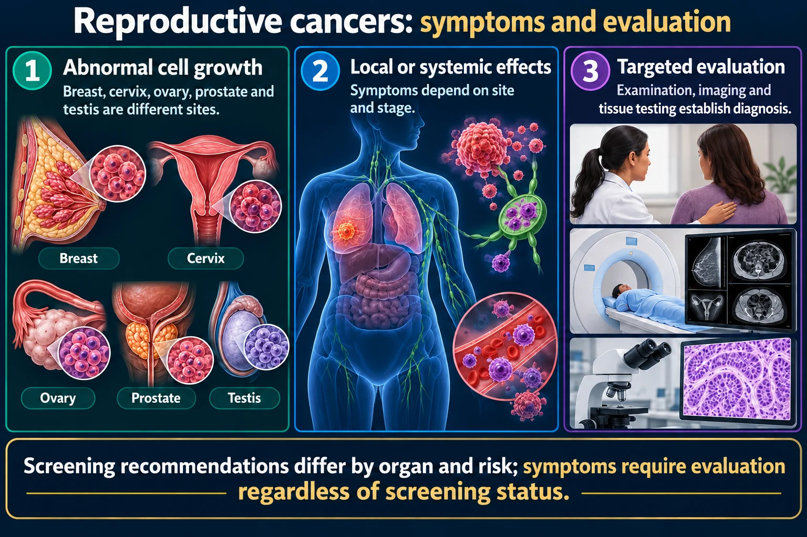
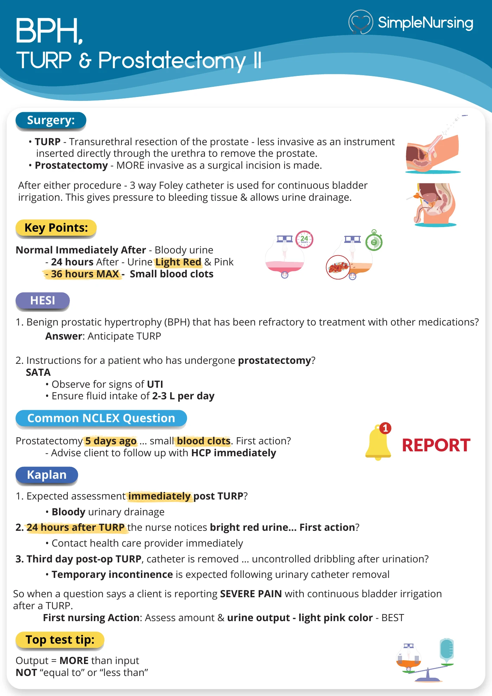
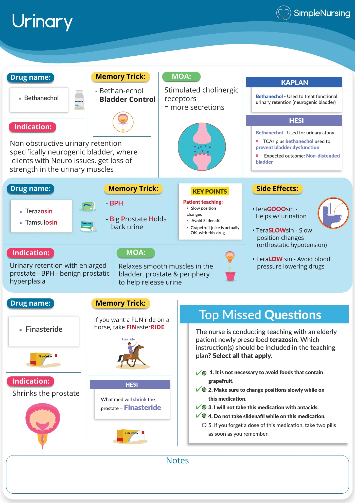
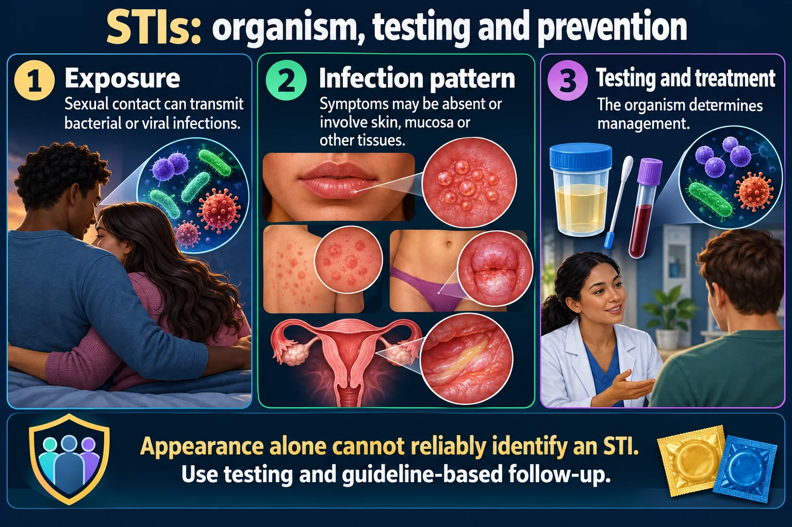

Reproductive Disorders — Completed
108 slides: all 102 original lecture slides plus six completed answer slides. Includes diagnostic teaching, hysterectomy types, CBI calculation, and erectile dysfunction.
Exam 5 · Week 11 · Standalone study page
M11 · Reproductive Disorders
☢️ Brachytherapy · Picture guide
See the equipment, temporary HDR/LDR vs. permanent seeds, why the applicator must stay still, and the original Brachy Brakes memory scene.
Open brachytherapy infographic & nursing care ↗This page keeps all of the original course information, while reducing the decision to one module: reproductive conditions, procedures and patient teaching.
NUR 258 · MODULE 11 · PLAY & PRACTICE
📋 Reproductive Care Clinic
24 matching prompts, 5 case questions and 4 visual exercises. Four pairs at a time, with saved practice.
Play this module →Module 11 · Content review
Complete the topic review
Use these focused lessons with the detailed condition notes below.
Hysterosalpingogram
Contrast imaging outlines the uterine cavity and fallopian tubes, usually during an infertility evaluation. Schedule after menstrual bleeding and before expected ovulation according to the service; verify pregnancy exclusion, pelvic-infection symptoms and prior contrast reactions. Explain speculum/cervical catheter placement, transient cramping and possible light spotting; provide ordered analgesia and a pad. Report fever, increasing pelvic pain, heavy bleeding, faintness or allergic symptoms. Follow the procedural service’s intercourse/medication instructions including any medication preparation specific to that service.
Brunner & Suddarth and the supplied ATI adult medical-surgical/nutrition texts, reconciled with the current guidance linked here.
Cystocele and rectocele
Distinguish the organ and the functional problem; the bulge alone does not determine treatment.
- Causes And Risks
- Pelvic floor weakness is associated with childbirth, aging/menopause, obesity, chronic straining and prior pelvic surgery.
- Pathophysiology
- Cystocele is bladder descent into the anterior vaginal wall; rectocele is rectal protrusion into the posterior wall.
- Diagnostics
- History plus pelvic examination with straining; assess urine retention/infection or incomplete bowel emptying as indicated.
- Manifestations
- Vaginal pressure/bulge; cystocele may cause incontinence or incomplete voiding; rectocele may cause obstructed defecation.
- Medical Management
- Pelvic floor therapy, bowel/weight management and a fitted pessary; selected patients need surgical repair based on symptoms and goals.
- Nursing Priorities
- Assess elimination, skin and comfort; teach pelvic floor exercises and pessary care; monitor urinary retention or infection and postoperative restrictions.
- Education
- Avoid constipation/straining, attend pessary checks and report bleeding, discharge, pain or inability to void; procedures and follow-up are individualized.
Brunner & Suddarth and the supplied ATI adult medical-surgical/nutrition texts, reconciled with the current guidance linked here.
Fibrocystic breast changes
Benign cyclic changes do not eliminate the need to evaluate a new or changing mass.
- Causes And Risks
- Common in reproductive years and influenced by cyclic hormonal changes.
- Pathophysiology
- Fibrosis and cyst formation produce variable nodularity and tenderness; ordinary nonproliferative changes differ from biopsy-proven atypia.
- Diagnostics
- Clinical examination and age/risk-appropriate imaging; ultrasound distinguishes cystic from solid lesions, with aspiration/biopsy when indicated.
- Manifestations
- Often bilateral lumpy, mobile, tender tissue that varies with the menstrual cycle; persistent focal change still warrants evaluation.
- Medical Management
- Reassurance after appropriate evaluation, supportive bra, analgesia and aspiration for selected painful cysts.
- Nursing Priorities
- Characterize timing and changes, facilitate imaging and reinforce follow-up instead of declaring a mass benign by palpation.
- Education
- Report a new persistent lump, skin/nipple change or bloody discharge; follow the individualized screening plan.
Brunner & Suddarth and the supplied ATI adult medical-surgical/nutrition texts, reconciled with the current guidance linked here.
PCOS
Connect cycle symptoms with metabolic and endometrial risk.
- Causes And Risks
- Genetic/metabolic susceptibility and insulin resistance; PCOS can occur at any body size.
- Pathophysiology
- Hyperandrogenism and ovulatory dysfunction contribute to irregular cycles, infertility and unopposed endometrial estrogen exposure.
- Diagnostics
- In adults, two of ovulatory dysfunction, hyperandrogenism and polycystic ovarian morphology after excluding mimics; assess metabolic risk. Adolescent criteria differ.
- Manifestations
- Irregular/absent menses, acne/hirsutism and possible infertility; obesity is neither required nor diagnostic.
- Medical Management
- Treatment follows goals: lifestyle/metabolic care, endometrial protection/cycle management, selected metformin or antiandrogens, and fertility-directed treatment.
- Nursing Priorities
- Assess bleeding, pregnancy possibility, metabolic findings, body-image distress and adherence; avoid stigmatizing assumptions.
- Education
- Explain that irregular cycles do not prevent pregnancy; discuss contraception when needed, medication pregnancy risks and long-term follow-up.
Brunner & Suddarth and the supplied ATI adult medical-surgical/nutrition texts, reconciled with the current guidance linked here.
Uterine fibroids
Fibroids are benign uterine smooth-muscle tumors; the bleeding burden and fertility goals guide care.
- Causes And Risks
- Reproductive-age hormonal exposure, family history and other demographic factors influence risk.
- Pathophysiology
- Leiomyomas arise in uterine muscle; location and size determine bleeding, pressure and reproductive effects.
- Diagnostics
- Pelvic assessment and ultrasound; CBC for anemia and evaluation of abnormal bleeding to exclude other causes.
- Manifestations
- May be asymptomatic or cause heavy/prolonged bleeding, pelvic pressure, urinary frequency, constipation and reproductive problems.
- Medical Management
- Observation if asymptomatic; bleeding-directed medication, selected uterine artery embolization, myomectomy or hysterectomy according to goals.
- Nursing Priorities
- Quantify bleeding and anemia symptoms, manage pain, prepare for procedures and monitor hemorrhage/infection after treatment.
- Education
- Report severe bleeding or dizziness; clarify fertility effects before a procedure and reinforce iron therapy when prescribed.
Brunner & Suddarth and the supplied ATI adult medical-surgical/nutrition texts, reconciled with the current guidance linked here.
Male diagnostic tests
PSA is a prostate-derived marker that can rise with cancer, benign enlargement or inflammation; a result alone neither confirms nor excludes cancer. DRE assesses accessible prostate texture/size but does not replace an agreed screening pathway. TRUS uses a rectal ultrasound probe to image the prostate and may guide biopsy; imaging alone and biopsy have different bleeding/infection risks. For biopsy, verify the prescribed medication/anticoagulant plan and prophylaxis, explain expected limited spotting, and escalate fever, retention or heavy bleeding. Penile Doppler ultrasound evaluates penile arterial inflow/venous function, sometimes after a clinician-administered erection-inducing injection; explain privacy, the procedure and prolonged painful erection precautions. Prostatic secretion or pre/post-massage urine testing may be selected for chronic bacterial prostatitis; do not massage a suspected acutely infected prostate because bacteremia can result.
Sources: NIDDK erectile dysfunction diagnosis · NIDDK prostatitis · EAU Urological Infections guideline: acute and chronic bacterial prostatitis; Brunner & Suddarth and the supplied ATI adult medical-surgical/nutrition texts, reconciled with the current guidance linked here.
EPCA-2 — required syllabus term, historical marker
EPCA-2 (early prostate cancer antigen-2) is a historical investigational serum marker. The prominent original study was retracted, so EPCA-2 is not an established routine screening or diagnostic test. Recognize the term on the course review list while distinguishing it from current clinical evaluation.
Sources: Retraction notice for EPCA-2 serum-marker study, Urology 2012; Brunner & Suddarth and the supplied ATI adult medical-surgical/nutrition texts, reconciled with the current guidance linked here.
Erectile dysfunction
Assess reversible contributors and cardiovascular risk while supporting privacy and relationship goals.
- Causes And Risks
- Vascular disease, diabetes, neurologic injury, medications, endocrine disorders, pelvic treatment and psychological factors can contribute.
- Pathophysiology
- Impaired arterial inflow, smooth-muscle relaxation, venous trapping or neural signaling prevents a satisfactory erection.
- Diagnostics
- Sexual/medical/medication history, physical examination and selected glucose, lipid, hormone or penile Doppler testing.
- Manifestations
- Persistent difficulty attaining or maintaining an erection; distinguish libido and ejaculation concerns.
- Medical Management
- Treat contributors; consider PDE5 inhibitors, vacuum device, specialist-directed injections or prosthesis and psychological/relationship care.
- Nursing Priorities
- Review medication interactions and blood pressure, use nonjudgmental questions and assess effects on self-esteem and relationships.
- Education
- Never combine a PDE5 inhibitor with nitrates; disclose recent use during chest-pain care and seek urgent care for an erection lasting four hours or more.
Sources: NIDDK erectile dysfunction diagnosis; Brunner & Suddarth and the supplied ATI adult medical-surgical/nutrition texts, reconciled with the current guidance linked here.
Prostatitis
Differentiate acute/chronic bacterial prostatitis from chronic pelvic pain syndrome.
- Causes And Risks
- Bacterial infection may follow ascending urinary infection/instrumentation; chronic pelvic pain often has no proven bacterial infection.
- Pathophysiology
- Prostate inflammation causes urinary obstruction, pain and, in acute bacterial disease, possible systemic infection.
- Diagnostics
- Urinalysis/culture and directed examination; obtain blood cultures when systemically ill. Avoid vigorous prostate massage in acute bacterial disease.
- Manifestations
- Acute fever/chills, dysuria, frequency, perineal/pelvic pain and possible retention; chronic syndromes cause recurring pelvic/voiding symptoms.
- Medical Management
- Culture-guided antibiotics for bacterial disease; severe illness needs hospital/IV treatment. Nonbacterial chronic pelvic pain requires individualized multimodal care.
- Nursing Priorities
- Monitor for sepsis and retention, obtain specimens promptly, provide prescribed analgesia and comfortable positioning/heat as appropriate.
- Education
- Complete antibiotics when indicated, return for fever/retention/worsening pain and explain that recurrent pelvic pain does not automatically require antibiotics.
Sources: NIDDK prostatitis · EAU Urological Infections guideline: acute and chronic bacterial prostatitis; Brunner & Suddarth and the supplied ATI adult medical-surgical/nutrition texts, reconciled with the current guidance linked here.
Epididymitis
Acute scrotal pain requires urgent evaluation for torsion before attributing it to infection.
- Causes And Risks
- Ascending STI or urinary enteric infection; risks include exposure history, urinary obstruction and instrumentation.
- Pathophysiology
- Inflammation/infection of the epididymis may extend to the testis.
- Diagnostics
- Examination, urine bacterial culture and gonorrhea/chlamydia NAAT; ultrasound when needed to evaluate torsion or an uncertain diagnosis.
- Manifestations
- Usually unilateral scrotal pain, swelling and tenderness with possible fever, dysuria or discharge; sudden severe pain is a torsion emergency.
- Medical Management
- Prompt empiric then organism-directed antibiotics; ceftriaxone plus doxycycline is the CDC regimen for likely gonorrhea/chlamydia, with different regimens for enteric risk.
- Nursing Priorities
- Monitor pain/fever, support the scrotum and give ordered analgesia; reevaluate if improvement does not begin within 72 hours.
- Education
- Complete therapy; for STI-associated infection ensure partner evaluation/treatment and avoid sex until treatment is complete for both and symptoms resolve.
Sources: CDC epididymitis treatment guideline; Brunner & Suddarth and the supplied ATI adult medical-surgical/nutrition texts, reconciled with the current guidance linked here.
▸M11Reproductive DisordersWeek 11
What these look like
💡 The one idea
Most reproductive questions are screening questions. Who gets screened, how often, and what finding demands referral rather than reassurance.
| Finding | Reassuring | Refer / concerning |
|---|---|---|
| Breast lump | Tender, mobile, changes with cycle | Hard, fixed, painless, irregular; skin dimpling; nipple retraction |
| Testicular | Soft, tender, transilluminates | Painless hard lump, heaviness |
| Postmenopausal bleeding | Always abnormal — always referred | |

🖼️ Prostate and testicular cancer.
Screening recommendations differ by organ and risk; symptoms require evaluation regardless of screening status.
Read the picture
Abnormal cell growth
Breast, cervix, ovary, prostate and testis are different sites.
Local or systemic effects
Symptoms depend on site and stage.
Targeted evaluation
Examination, imaging and tissue testing establish diagnosis.
Breast and gynecologic clues
A new mass, unexpected bleeding or persistent pelvic symptoms deserves evaluation.
Prostate and testicular clues
Urinary symptoms or a testicular mass require assessment; neither is diagnostic alone.
Treatment
Stage, biology and patient preferences guide surgery, radiation or systemic therapy.
🚨 Testicular torsion — a true surgical emergency
Sudden severe unilateral pain, swelling, nausea, high-riding testicle.
There is roughly a 6-hour window to save the testicle. This is never "watch and see".
✅ BPH vs prostate cancer
BPH — benign enlargement. Weak stream, hesitancy, nocturia, incomplete emptying. Symptoms come early because the urethra is squeezed.
Prostate cancer — grows on the outer gland, so it is silent early. Symptoms mean it is advanced. Screened with DRE and PSA.
Avoid anticholinergics, decongestants and antihistamines in BPH - they worsen retention.
🖼️ Ovarian and cervical cancer.
Read the picture
Abnormal cell growth
Breast, cervix, ovary, prostate and testis are different sites.
Local or systemic effects
Symptoms depend on site and stage.
Targeted evaluation
Examination, imaging and tissue testing establish diagnosis.
Breast and gynecologic clues
Prostate and testicular clues
Treatment
⭐ Teaching that shows up as questions
- Separate breast awareness and diagnostic evaluation from screening. Teach reporting of a new breast/nipple change; do not portray scheduled BSE as a proven mortality-reducing screening test. Name the mammography guideline: USPSTF average-risk screening is every two years at ages 40–74; higher risk and other guidelines may use different schedules.
Original course wording
Earlier study notes, retained for comparison with the guidance above. These notes may reflect a book edition or lecture convention; check the assigned source for exam wording.
Breast self-awareness monthly, best 7–10 days after menses starts
- Testicular self-exam monthly, after a warm shower when the scrotum is relaxed
- HPV vaccine protects against cervical and other cancers — give before exposure
⭐ High-yield — what the exam actually asks
Show 5 moreHide these 5
- Under USPSTF recommendations, ages 21–29 use cytology every 3 years; ages 30–65 may use cytology every 3 years, primary high-risk HPV every 5 years or cotesting every 5 years. Total hysterectomy with cervix removal generally ends screening only when there is no history of high-grade precancer/cervical cancer; retained cervix, risk/history and surveillance change the plan. A pelvic exam is not synonymous with a screening Pap.
Original course wording
Earlier study notes, retained for comparison with the guidance above. These notes may reflect a book edition or lecture convention; check the assigned source for exam wording.
Pap every 3 years routinely (yearly if indicated). No douching, vaginal meds or intercourse for 24 hr beforehand. A total hysterectomy (uterus + cervix out) means no more Paps.
- Separate breast awareness and diagnostic evaluation from screening. Teach reporting of a new breast/nipple change; do not portray scheduled BSE as a proven mortality-reducing screening test. Name the mammography guideline: USPSTF average-risk screening is every two years at ages 40–74; higher risk and other guidelines may use different schedules.
Original course wording
Earlier study notes, retained for comparison with the guidance above. These notes may reflect a book edition or lecture convention; check the assigned source for exam wording.
BSE monthly, 5–7 days after menses , easiest with soapy skin in the shower using fingertips. Clinical exam q3 yr ages 20–39, then yearly at 40+. Screening mammography yearly from age 40 .
- Mammogram teaching: no deodorant, lotion or powder in the axilla that day — metal particles mimic calcifications and cause false positives.
- DCIS is non-invasive and does not metastasize (lumpectomy + radiation). Inflammatory carcinoma is rare and aggressive with peau d'orange skin.
- Sentinel-node findings guide staging and treatment; a positive node does not automatically require full axillary dissection. The oncology team considers tumor/nodal burden, surgery, radiation and systemic therapy.
Original course wording
Earlier study notes, retained for comparison with the guidance above. These notes may reflect a book edition or lecture convention; check the assigned source for exam wording.
Sentinel node biopsy: negative means no further nodes come out; positive triggers axillary dissection.
Show 5 moreHide these 5
- Lymphedema after node removal: no BP, IVs, injections or blood draws in that arm. Limb alert bracelet, compression sleeve.
- Ovarian cancer is the silent one — vague bloating, early satiety, pelvic pain, so it presents late. CA-125 tracks disease but is not a screening test. Endometrial cancer announces itself with post-menopausal bleeding, which is why it is caught earlier; tamoxifen and estrogen dominance are risk factors.
- PCOS needs 2 of 3: hyperandrogenism, chronic anovulation, polycystic ovaries on ultrasound. Metformin regulates cycles, spironolactone reduces hirsutism, OCPs balance testosterone.
- Endometriosis = lining-like tissue outside the uterus → pain, scarring, infertility. Not insulin-related, and not an infection. The triad is dysmenorrhea, dyspareunia, dyschezia; laparoscopy is the definitive diagnosis, and the stage does not predict the pain. PID follows untreated STIs and causes scarring and infertility.
- Endometriosis drugs. A GnRH agonist (leuprolide) makes a medical menopause — hot flashes and bone loss, so add-back therapy, a limited course, calcium and weight-bearing exercise. Danazol is androgenic and its deepened voice does not reverse.
- After hysterectomy assess airway/breathing, circulation, bleeding, pain, urinary function and thromboembolism risk according to the actual findings. Escalate heavy/increasing bleeding or instability rather than using the stated four-hour pad rule. Hysterectomy removes the uterus; oophorectomy can be unilateral or bilateral, and removal of both ovaries before menopause causes surgical menopause.
Original course wording
Earlier study notes, retained for comparison with the guidance above. These notes may reflect a book edition or lecture convention; check the assigned source for exam wording.
Hysterectomy: the priority post-op concern is hemorrhage , not airway. Excessive bleeding = one pad saturated in 4 hours . Foley stays 24 hr ; anti-embolism stockings pre-op.
Show 5 moreHide these 5
- After hysterectomy assess airway/breathing, circulation, bleeding, pain, urinary function and thromboembolism risk according to the actual findings. Escalate heavy/increasing bleeding or instability rather than using the stated four-hour pad rule. Hysterectomy removes the uterus; oophorectomy can be unilateral or bilateral, and removal of both ovaries before menopause causes surgical menopause.
Original course wording
Earlier study notes, retained for comparison with the guidance above. These notes may reflect a book edition or lecture convention; check the assigned source for exam wording.
Anything ending in -oophorectomy (both ovaries) = immediate surgical menopause at any age → HRT discussion.
- The specimen depends on the infection and exposure site: vaginal/cervical swabs or first-catch urine NAAT can diagnose chlamydia/gonorrhea, while syphilis and HIV require blood-based testing; lesions and extragenital exposure require appropriate site-specific tests.
Original course wording
Earlier study notes, retained for comparison with the guidance above. These notes may reflect a book edition or lecture convention; check the assigned source for exam wording.
STI workup: cervical swab (not blood, not urine); ask duration first (months of symptoms suggests PID); treat partners; pelvic ultrasound only if PID is suspected. HPV vaccine at 11–12 , available ages 9–26.
- People who are pregnant or may become pregnant must not handle crushed or broken finasteride tablets. Intact film coating prevents contact during ordinary handling; use the product-specific safety instructions.
Original course wording
Earlier study notes, retained for comparison with the guidance above. These notes may reflect a book edition or lecture convention; check the assigned source for exam wording.
BPH is enlargement, not cancer. Finasteride shrinks the prostate but takes up to 6 months and pregnant women must not handle it . Tamsulosin relaxes the outlet — warn about orthostatic hypotension during nighttime voiding.
- Record irrigation input and total drainage separately; estimated urine output equals total drainage minus irrigant infused. Assess color, clots, pain/distention and catheter patency and escalate reduced return or increased bleeding.
Original course wording
Earlier study notes, retained for comparison with the guidance above. These notes may reflect a book edition or lecture convention; check the assigned source for exam wording.
TURP/CBI : three-way catheter; the irrigant is NOT counted in I&O ; titrate the rate to keep urine pink or lighter; never run CBI on an IV pump . Expected: pink-tinged urine and a constant urge to void. Unexpected: bright red urine and bladder spasms → check for kinks and clots, increase the irrigation rate, then manually irrigate; call the provider if that fails. No heavy lifting, straining or intercourse for 2–6 weeks .
- Prostate cancer metastasizes to bone — new back or hip pain with weight loss may be the first sign. Testicular cancer: painless lump in men 15–35, highly curable, monthly self-exam; markers AFP, beta-hCG, LDH. ED can be an early marker of vascular disease; PDE5 inhibitors are contraindicated with nitrates.
Read the picture
Abnormal cell growth
Breast, cervix, ovary, prostate and testis are different sites.
Local or systemic effects
Symptoms depend on site and stage.
Targeted evaluation
Examination, imaging and tissue testing establish diagnosis.
Breast and gynecologic clues
Prostate and testicular clues
Treatment
🎧 From the exam-prep recording
What the faculty actually said in the review session for this week — their numbers, their worked calculations, their priority rulings. On an exam, this beats the textbook.
Show 4 moreHide these 4
- Sildenafil interactions they tested: nitroglycerin, amyl nitrate, and doxazosin. Recognize "-afil" as PDE5. Acetaminophen and amoxicillin are safe.
- Painless genital ulcer = syphilis → penicillin. Painful blisters = herpes.
- Endometrial cancer: postmenopausal bleeding is never normal. Unopposed estrogen is the highest risk — including endogenous estrogen from obesity, because fat makes estrogen. Tamoxifen raises risk by stimulating uterine estrogen receptors. Nulliparity, late menopause and early menarche all lengthen estrogen exposure; multiparity is protective.
- Post-void residual: under 50–100 mL normal, 100–300 retention, over 300 significant. Eight hours without voiding and uncomfortable after prostate surgery → bladder scan first. Do not push fluids into a bladder that cannot empty.
Show 5 moreHide these 5
- TURP with CBI: bright red urine with clots means INCREASE the irrigation rate. You are aiming for a rose color. A persistent urge to void alongside the clots is the bladder spasming against an obstructed catheter, not a full bladder. Their analogy — CBI does for the prostatic bed what fundal massage does after birth. Let it run bright red and the catheter clots off, and then you are manually irrigating.
- Sexual assault priority order as taught: consent → emotional support and explanation → exam and documentation → collect and label clothing as evidence. They said the first two are genuinely arguable — but collecting and labeling clothing is never the first action.
- Pre-op priority: allergies — anesthesia, latex, malignant hyperthermia — over jewelry removal. Consent, ID and allergy band top the list.
- Endometriosis is not endometritis. One is lining-like tissue growing outside the uterus — chronic and cyclic. The other is an infection of the lining, almost always postpartum, with fever, a tender uterus and foul-smelling lochia. Only the infection gets antibiotics.
- Shoulder pain after a laparoscopy is the CO2 and is expected — walk it off. Severe abdominal pain is not.
- Post-op endometriosis surgery: no heavy lifting and nothing in the vagina for 2 weeks. Warm compresses for comfort. Screen for depression — it is chronic, debilitating, and often takes years to diagnose.
- Deteriorating post-op trend: temp
98.6 → 99.5 → 101.2°F, incision clean → red → foul-smelling, pads saturated every6 → 4 → 2hours. Do: vitals and I&O, IV antibiotics, notify. Ambulation, warm compresses to the incision, and oral iron are all wrong — active significant bleeding needs transfusion, not iron.
Show 3 moreHide these 3
- Sildenafil plus any nitrate causes profound hypotension. Question it before giving. Watch for a nitrate buried in a name — amyl nitrite counts. The whole PDE5 group (sildenafil, tadalafil, vardenafil) carries the same interaction.
- One hour post-operative: vital signs first. Not reviewing pre-operative labs, and not infection — infection takes days, not an hour. When a priority question offers something dramatic, run ABC first.
- PCOS: the dietary answer is weight reduction and a low-glycemic diet, because the underlying problem is insulin resistance.
Show 3 moreHide these 3
- Cystocele: pelvic floor exercises, avoid heavy lifting and straining, treat constipation, and lose weight if relevant. Surgery is for what conservative measures do not hold.
- “Avoid sexual activity for 24 hours” is the wrong shape of answer when the underlying problem has not been treated yet. Treat first, then give the timeframe.
- Watch for absolutes. Options containing always, never or only are usually wrong in a medication question, because different clients need different things.
Show 5 moreHide these 5
- The post-op priority ladder, whatever the surgery was: airway → breathing → circulation → neuro → is the gut waking up → is she making urine → then look at the surgical site. They set this one twice.
- They trap this from both sides. A frightening surgery (quintuple bypass, intracranial bleed) with a quiet ABC problem buried in it — do you go to the ABC answer first? Or a clearly stable client with a tempting airway option — do not put oxygen on someone with no airway or breathing problem. Miss neither direction.
- The AND rule. When an option joins two things with and, every part has to be true for the option to be true. “Provide emotional support” alone would rank first in the assault question; “provide emotional support and explain procedures” drops below consent, because you cannot explain a procedure she has not agreed to.
- Radical prostatectomy takes the whole prostate and reattaches the bladder to the urethra — which is exactly why it obstructs. Eight hours without voiding and uncomfortable is obstruction: pushing fluids makes more urine, pain medication only masks it, and ambulating guesses when a bladder scan measures.
- Retention is not just uncomfortable. Urine that never fully leaves the bladder breeds infection and backs pressure up toward the kidneys. That is why a 500 mL post-void residual is a problem and not a wait-and-see.
⚠️ Exam traps
- Record irrigation input and total drainage separately; estimated urine output equals total drainage minus irrigant infused. Assess color, clots, pain/distention and catheter patency and escalate reduced return or increased bleeding.
Original course wording
Earlier study notes, retained for comparison with the guidance above. These notes may reflect a book edition or lecture convention; check the assigned source for exam wording.
Expected vs unexpected TURP findings, and remembering the irrigant is excluded from I&O.
- Fibrocystic changes are bilateral, mobile and cyclical; a cancerous mass is single, fixed and non-tender.
⚠️ What it turns into — the complication for each one
The disorder cards below run definition, causes, signs, diagnostics, management and nursing. This is the part they do not have, and it is where the exam lives: so what happens if this is missed or left? Obstruction and metastasis carry most of it — plus the post-operative complications, which is where the exam usually stands.
| Disorder | What it turns into |
|---|---|
| Benign prostatic hyperplasia | Acute urinary retention, UTI, bladder calculi, and back-pressure causing hydronephrosis and renal failure. After TURP: hemorrhage and clot retention, TUR syndrome from absorbed irrigation causing hyponatremia, incontinence, retrograde ejaculation |
| Prostate cancer | Bone metastasis — pain and pathological fracture. Urinary obstruction; after treatment, incontinence and erectile dysfunction, which she and he need told beforehand |
| Testicular cancer | Spread to retroperitoneal nodes and lungs, and infertility from the disease or its treatment. Highly curable when it is found early, which is the whole argument for self-examination |
| Breast cancer | Metastasis to bone, lung, liver and brain. Lymphedema after axillary node dissection — no blood pressure, venepuncture or injection in that arm, ever. Recurrence, and altered body image |
| Cervical, ovarian and endometrial cancer | Ovarian cancer is usually advanced at diagnosis because the early symptoms are vague — ascites, bowel obstruction, widespread disease. Fistula formation and lymphedema after treatment; infertility |
| Sexually transmitted infections | Pelvic inflammatory disease causing infertility and ectopic pregnancy, and chronic pelvic pain. Neonatal infection during birth. Raised HIV transmission. Untreated syphilis progresses to neurosyphilis and cardiovascular syphilis |
🎈 The reproductive disorders, section by section
Male conditions first, then breast and gynecological cancers, then the infections. Same six sections every time.
Benign Prostatic HyperplasiaOpenClose
Definition and Overview
Non-cancerous enlargement of the prostate, which sits around the urethra, so as it grows it squeezes the urethra and obstructs the flow of urine. It is a normal consequence of ageing — most men over 60 have some — and it is not cancer and does not become cancer, though the two can coexist. The danger is backpressure: retention, infection, bladder stones and eventually kidney damage.
Causes and Risk Factors
Age and functioning testes are the two requirements; hormonal change with age drives it. Family history, obesity, physical inactivity, diabetes and heart disease increase the risk. Symptoms are made abruptly worse by anticholinergics, antihistamines, decongestants and opioids, and by alcohol and cold weather — a common cause of sudden retention in the emergency department.
Clinical Manifestations
Two groups. Obstructive: hesitancy, a weak or intermittent stream, straining, dribbling at the end, incomplete emptying, and acute urinary retention. Irritative: frequency, urgency, nocturia, and urge incontinence. Acute retention — unable to pass urine, with a distended, tender, palpable bladder and severe discomfort — is an emergency and needs catheterization now.
Assessment and Diagnostic Findings
Digital rectal examination: a smoothly enlarged, firm, non-tender prostate; a hard, nodular or irregular prostate suggests cancer instead. Symptom scoring, urinalysis and culture to exclude infection, creatinine for renal function, PSA (which BPH also raises, so it is interpreted with care), post-void residual volume by bladder scan, and uroflowmetry. Transrectal ultrasound and biopsy if cancer is suspected.
Medical Management
Mild symptoms are watched. Drugs: alpha blockers (tamsulosin, doxazosin) relax the smooth muscle and work within days, while 5-alpha-reductase inhibitors (finasteride, dutasteride) shrink the gland but take 3 to 6 months. Tadalafil for men with coexisting erectile dysfunction. Surgery when drugs fail or complications appear: transurethral resection of the prostate (TURP) and newer minimally invasive procedures.
Nursing Management and Client Education
Teach the drug specifics, because they decide adherence: alpha blockers cause orthostatic hypotension and dizziness — take the first dose at bedtime and rise slowly, and they cause retrograde ejaculation, which is harmless but alarming if unwarned. Finasteride lowers the PSA by about half, so the lab value must be doubled to interpret it, takes months to work, and must not be handled by anyone who is or may become pregnant — crushed or broken tablets can be absorbed through the skin and cause fetal harm. Behavioral teaching: avoid anticholinergics, antihistamines and decongestants, limit fluid and caffeine in the evening but do not restrict fluid overall, avoid alcohol, do not hold urine, and take time to empty completely. After TURP, expect continuous bladder irrigation: keep the drainage light pink and free of clots, subtract the irrigant from the total output to record true urine, report bright red bleeding with clots, and avoid straining, heavy lifting and sitting for long periods for several weeks.
Visual references for this topic

 Prostate - BPHExam 5 · Study page →
Prostate - BPHExam 5 · Study page →Preview here
 BPH 2Exam 5 · Study page →
BPH 2Exam 5 · Study page →Preview here

BPH 2📄 Simple Nursing · Opens in Drive →Read the full PDF here

Urinary retention & BPH📄 Simple Nursing · Opens in Drive →Read the full PDF here
Prostate CancerOpenClose
🖼️ InfographicsProstate - BPH
Definition and Overview
The most common cancer in men after skin cancer. Most prostate cancers are adenocarcinomas that grow slowly in the peripheral zone of the gland, which is why early disease causes no symptoms at all — urinary symptoms mean the tumor is large or central. It spreads characteristically to bone, especially the spine and pelvis.
Causes and Risk Factors
Age over 50, family history, and Black ancestry, which carries both higher incidence and worse outcomes. Inherited BRCA1 and BRCA2 mutations, and a diet high in red and processed meat and low in vegetables. Obesity is linked to more aggressive disease.
Clinical Manifestations
Usually none in early disease. Later, obstructive urinary symptoms indistinguishable from BPH, hematuria, and painful ejaculation or blood in semen. New back, hip or pelvic bone pain in a man with prostate cancer is bone metastasis until proven otherwise, and new back pain with any leg weakness is possible spinal cord compression — report it the same day. Weight loss and fatigue with advanced disease.
Assessment and Diagnostic Findings
PSA and digital rectal examination for screening, with the decision to screen made jointly with the client after discussing the benefits and the risk of overdiagnosis — typically from age 50, or 45 with higher risk. A hard, irregular, nodular prostate on examination. Transrectal ultrasound-guided biopsy confirms it, and the Gleason score grades it. Bone scan, CT and MRI for staging. Serial PSA to monitor treatment.
Medical Management
Options range widely by stage, grade and life expectancy: active surveillance for low-risk disease in older men, radical prostatectomy, external beam radiation or brachytherapy, and androgen deprivation therapy (LHRH agonists such as leuprolide, antiandrogens, or orchiectomy) for advanced disease, plus chemotherapy and newer hormonal agents. Bisphosphonates or denosumab for bone metastases.
Nursing Management and Client Education
The side effects are intimate and under-discussed — raise them yourself. After prostatectomy or radiation, expect urinary incontinence and erectile dysfunction: teach pelvic floor (Kegel) exercises before and after surgery, explain that continence usually improves over months, and offer referral for erectile dysfunction rather than waiting to be asked. On androgen deprivation therapy, teach the effects honestly — hot flushes, loss of libido, fatigue, weight gain, loss of muscle and bone density and mood change — and add calcium, vitamin D, weight-bearing exercise and bone density monitoring. After brachytherapy, teach the radiation precautions given: avoid close prolonged contact with pregnant people and young children for the specified period, and strain urine for a displaced seed. After prostatectomy, catheter care, no heavy lifting or straining, and no driving while the catheter is in. Teach that new bone pain must be reported. Include the partner in the conversation if the client wishes; this affects both of them.
Visual references for this topic

Testicular CancerHighly curableOpenClose
🖼️ InfographicsProstate & Testicular Cancer
Definition and Overview
A cancer of the germ cells of the testis. It is uncommon overall but the most common solid cancer in men aged 15 to 35 — and it is one of the great success stories of oncology, with cure rates above 95% when found early and still high even with metastatic disease. Which makes early detection worth teaching.
Causes and Risk Factors
Undescended testis (cryptorchidism) is the strongest risk factor, and correcting it does not fully remove the risk. Then family or personal history, White ancestry, a previous testicular cancer in the other testis, HIV infection, and testicular atrophy from mumps orchitis or trauma.
Clinical Manifestations
A painless, firm lump or swelling in the testis, or a feeling of heaviness or dull ache in the scrotum, groin or lower abdomen. The mass does not transilluminate, which distinguishes it from a hydrocele. Occasionally gynaecomastia from hormone-producing tumors. Metastatic disease presents as back pain, a cough or dyspnea, or a supraclavicular node. Young men delay seeking help for this out of fear and embarrassment, and delay is the main reason a curable cancer becomes a difficult one.
Assessment and Diagnostic Findings
Physical examination and scrotal ultrasound. Tumor markers — AFP, beta-hCG and LDH — before surgery, and followed afterwards to detect recurrence. CT of the abdomen, pelvis and chest for staging. A suspicious testicular mass is never biopsied through the scrotum — that risks seeding the tumor; diagnosis is made by removing the testis through an inguinal incision.
Medical Management
Radical inguinal orchiectomy is both diagnostic and the first treatment. Then, by stage and cell type: surveillance, retroperitoneal lymph node dissection, radiation for seminoma, or cisplatin-based chemotherapy, which is what makes even metastatic disease curable. A testicular prosthesis can be placed at the time of surgery or later.
Nursing Management and Client Education
Discuss sperm banking before any treatment begins — chemotherapy, radiation and node dissection can all affect fertility, and this cannot be revisited afterwards. Reassure that one remaining testis usually maintains normal hormone levels, sexual function and fertility; young men assume otherwise and are often too embarrassed to ask. Address body image and offer the prosthesis conversation. After surgery: scrotal support, ice, no heavy lifting for several weeks. Teach the chemotherapy side effects, including that cisplatin is ototoxic and nephrotoxic — report hearing change or tinnitus. Then teach monthly testicular self-examination of the remaining testis, ideally after a warm shower when the scrotum is relaxed: roll each testis between thumb and fingers, feeling for any lump, hardness or change in size, and report anything found. Teach it to every young man you look after, not only this one.
Breast CancerOpenClose
🖼️ InfographicsMastectomy & Breast Surgery
Definition and Overview
The most commonly diagnosed cancer in women. Most arise in the ducts, and behavior depends heavily on receptor status — estrogen receptor, progesterone receptor and HER2 — which decides treatment as much as the stage does. Triple-negative disease lacks all three and is more aggressive. It occurs in men too, which is missed because nobody expects it.
Causes and Risk Factors
Female sex and increasing age are the biggest. Then BRCA1 and BRCA2 mutations and a strong family history, previous breast cancer or atypical hyperplasia, chest radiation in youth, and prolonged estrogen exposure — early menarche, late menopause, nulliparity or first birth after 30, no breastfeeding, and long-term combined hormone therapy. Also obesity after menopause, alcohol, and physical inactivity.
Clinical Manifestations
A hard, painless, irregular, fixed lump — most often in the upper outer quadrant. Then skin dimpling or a 'peau d'orange' orange-peel texture, nipple retraction or a new inversion, spontaneous bloody or clear nipple discharge from one duct, breast asymmetry or a change in contour, and persistent redness or scaling of the nipple (Paget disease). Axillary or supraclavicular nodes. A benign lesion such as a fibroadenoma is usually smooth, mobile, well-defined and often tender — but any new lump gets investigated, not observed.
Assessment and Diagnostic Findings
Mammography for screening, generally annually or biennially from age 40 to 50 by guideline and risk, with MRI added for high-risk women. Diagnostic mammography and ultrasound for a lump, then core needle biopsy, which is what diagnoses it. Receptor testing for ER, PR and HER2 on the specimen. Sentinel lymph node biopsy for nodal staging. CT, bone scan or PET for distant staging, and genetic testing where family history warrants.
Medical Management
Surgery: breast-conserving lumpectomy with radiation, or mastectomy, with sentinel node biopsy or axillary dissection, and reconstruction if the client chooses. Radiation after lumpectomy. Chemotherapy before or after surgery. Hormone therapy for receptor-positive disease — tamoxifen, or an aromatase inhibitor after menopause — usually for 5 to 10 years. Targeted therapy (trastuzumab) for HER2-positive disease, which is cardiotoxic and needs cardiac monitoring.
Nursing Management and Client Education
Lymphedema prevention after axillary surgery is lifelong teaching, and it belongs on the affected side only: no blood pressure measurement, no venepuncture, no injections and no IV lines in that arm; no tight jewellery or sleeves; protect against cuts, burns and insect bites; wear gloves for gardening and cleaning; report any swelling, heaviness or redness early, because early lymphedema is far more treatable. Post-operatively, elevate the arm, start the prescribed exercises on schedule, and manage the drain. On tamoxifen, teach hot flushes, and to report abnormal vaginal bleeding — there is an endometrial cancer risk — and leg swelling or pain, because of clot risk. On aromatase inhibitors, teach joint pain and bone loss, with calcium, vitamin D and bone density monitoring. On trastuzumab, teach the cardiac monitoring and to report breathlessness or swelling. Address body image, sexuality and fertility directly — refer for fertility preservation before treatment starts. Teach breast self-awareness rather than a rigid ritual: know how your breasts normally look and feel, and report any change.
Visual references for this topic


Original handouts and visual references

AI-generated clinical illustrations — educational examples, not patient photographs, and not diagnostic images.Sources: NCI — signs and symptoms of breast cancer
Cervical, Ovarian and Endometrial CancerOpenClose
🖼️ InfographicsOvarian & Cervical Cancer
Definition and Overview
Early symptoms may be vague: persistent bloating, early satiety, pelvic/abdominal discomfort and urinary changes warrant evaluation. There is no effective routine screening strategy for average-risk asymptomatic patients.
Original course wording
Earlier study notes, retained for comparison with the guidance above. These notes may reflect a book edition or lecture convention; check the assigned source for exam wording.
The three gynecological cancers, which behave very differently. Cervical cancer is caused by persistent HPV infection, is preventable by vaccination and detectable by screening long before it becomes cancer. Endometrial (uterine) cancer bleeds early , which is why most cases are found at an early, curable stage. Ovarian cancer has no screening test and no early symptoms , which is why it is usually advanced at diagnosis and has the worst prognosis of the three.
Causes and Risk Factors
Cervical: persistent high-risk HPV, early first intercourse, multiple partners, smoking, immunosuppression and HIV, and not being screened — which is the risk factor most cases share. Endometrial: unopposed estrogen — obesity, nulliparity, early menarche and late menopause, polycystic ovary syndrome, tamoxifen, and estrogen-only hormone therapy — plus diabetes, hypertension and Lynch syndrome. Ovarian: BRCA1 and BRCA2, family history, Lynch syndrome, nulliparity, and increasing age; oral contraceptives, pregnancy and breastfeeding are protective.
Clinical Manifestations
Cervical: silent in the precancerous stage; then postcoital bleeding, intermenstrual bleeding, and a watery or blood-tinged malodorous discharge; then pelvic or leg pain and leg swelling with advanced disease. Endometrial: any postmenopausal bleeding is endometrial cancer until proven otherwise and always needs investigation — it is never dismissed as 'just a period returning'; premenopausally, heavy or intermenstrual bleeding. Ovarian: vague and easily attributed to something else — bloating, abdominal or pelvic discomfort, early satiety, urinary urgency or frequency, persisting for weeks; then ascites and a palpable mass.
Assessment and Diagnostic Findings
Cervical: cervical cytology with HPV co-testing on the screening schedule, then colposcopy and biopsy, and conization or LEEP for high-grade lesions. Endometrial: transvaginal ultrasound for endometrial thickness and endometrial biopsy, which is diagnostic; dilation and curettage if the biopsy is inconclusive. Ovarian: pelvic examination, transvaginal ultrasound, CA-125 — useful for monitoring rather than screening — CT, and surgical staging, which is often how the diagnosis is made.
Medical Management
Cervical: excision or ablation for precancer; hysterectomy, radical hysterectomy or chemoradiation by stage. Endometrial: total hysterectomy with bilateral salpingo-oophorectomy, with radiation, hormonal therapy or chemotherapy added by stage. Ovarian: surgical debulking followed by platinum and taxane chemotherapy, with PARP inhibitors for BRCA-associated disease.
Nursing Management and Client Education
Prevention and detection are where nursing changes outcomes here. Teach the HPV vaccine for girls and boys, ideally at 11 to 12 and before any sexual activity, and that being vaccinated does not replace screening. Teach the screening schedule and find out why a client has not been screened, because the reasons — cost, transport, past trauma, fear, no interpreter — are usually solvable. Teach every postmenopausal woman to report any bleeding at all, immediately, and teach women on tamoxifen the same. Teach the vague ovarian symptoms and the rule of thumb: bloating or early satiety that persists for more than two or three weeks needs a doctor. After hysterectomy: no heavy lifting, nothing in the vagina and no intercourse for about 6 weeks, report bleeding, fever or foul discharge, and expect surgical menopause if the ovaries were removed — discuss hot flushes, bone health and sexual changes rather than leaving them to be discovered. Address grief over fertility and changes in sexual function, and offer referral.
Visual references for this topic

Original handouts and visual references

Sexually Transmitted InfectionsOpenClose
🖼️ InfographicsSexually Transmitted Infections — what each one looks likeSyphilis & ChlamydiaGonorrhea, HSV & HPV
Definition and Overview
Infections passed through sexual contact. Several are silent in most people, especially women, which is why screening rather than symptoms drives detection — and why untreated chlamydia and gonorrhea go on to cause pelvic inflammatory disease, chronic pelvic pain, ectopic pregnancy and infertility. Several are notifiable to public health, and partner treatment is part of curing the client.
Causes and Risk Factors
Unprotected intercourse, multiple or new partners, a partner with an STI, inconsistent condom use, age under 25, alcohol and drug use, transactional sex, and lack of access to care. Having one STI raises the risk of others, including HIV, so a diagnosis of any one is a reason to test for the rest.
Clinical Manifestations
Chlamydia and gonorrhea: often none; otherwise discharge, dysuria, postcoital bleeding, and testicular or pelvic pain. Trichomoniasis: frothy yellow-green discharge with itching. Syphilis: a painless chancre in the primary stage, then a secondary rash including the palms and soles with fever and lymphadenopathy, then years of latency before tertiary damage to the heart and brain. Genital herpes: painful grouped vesicles that ulcerate, with fever and malaise in the first episode, then lifelong recurrences. HPV: genital warts, or nothing at all while causing cervical change. PID: lower abdominal pain, fever, discharge, and cervical motion tenderness.
Assessment and Diagnostic Findings
Nucleic acid amplification testing for chlamydia and gonorrhea, on urine or a swab from every site of exposure — genital, rectal and pharyngeal. Serology for syphilis (RPR or VDRL screening, confirmed by a treponemal test) and for HIV and hepatitis B and C. Wet mount or NAAT for trichomonas; PCR or culture for herpes. Take a sexual history that is specific, routine and non-judgemental — ask about partners, practices and protection the same way you ask about anything else. Screen annually for chlamydia in sexually active women under 25.
Medical Management
Chlamydia: doxycycline, or azithromycin in pregnancy. Gonorrhea: intramuscular ceftriaxone, with resistance now a serious problem. Syphilis: benzathine penicillin G, dose and duration by stage. Trichomonas: metronidazole for the client and the partner. Herpes: antivirals (acyclovir, valacyclovir) shorten episodes and reduce transmission but do not cure. HPV: treat the warts; prevent with vaccination. PID: combination antibiotics covering both organisms, with admission for severe disease. Partner notification and treatment throughout.
Nursing Management and Client Education
Take the sexual history without embarrassment or assumption; your comfort determines whether the client tells you the truth. Teach that the full course must be finished, partners must be treated, and there is no sex until both have completed treatment — otherwise they re-infect each other. Teach condom use for every act, and that condoms reduce but do not eliminate the risk of herpes and HPV, which spread by skin contact. Teach the HPV and hepatitis B vaccines, and offer HIV testing and PrEP where appropriate. Explain that herpes is lifelong but manageable, that transmission can occur without visible lesions, and that suppressive therapy exists — the diagnosis is often experienced as devastating and deserves real time. Reinforce return for a test of cure or re-screening at 3 months where indicated. Keep it confidential, and keep it free of judgement — shame is the reason people do not come back, and not coming back is what causes the complications. Report notifiable infections as required.
Visual references for this topic

Original handouts and visual references
![STIs visual study guide. Banner: many STIs have no symptoms, so testing matters. Eight panels. Chlamydia (bacteria): often silent, may cause discharge or burning urination; curable with antibiotics. Gonorrhea (bacteria): may cause discharge or burning urination, often silent; curable with recommended antibiotics. Syphilis (bacteria): the early sore is often painless, a later rash may involve palms and soles; curable with antibiotics. Trichomoniasis (parasite): often silent, may cause irritation, discharge or burning; curable with antiparasitic medicine. Genital herpes (virus): may cause painful blisters or sores, often mild or unnoticed; antivirals control outbreaks but there is no cure. HPV (virus): often silent, some types cause warts and others cause cancer; vaccination helps prevent infection. HIV (virus): may cause early flu-like illness or no symptoms; antiretroviral therapy controls the virus. Nursing priorities: test based on exposure sites and risk, support partner testing and treatment, teach medication adherence and follow-up. Footer: prevent, test, treat - condoms reduce risk but do not eliminate it, and HPV and hepatitis B vaccines help prevent infection.](img/infographics/stis-visual-study-guide.webp)

Painless single ulcer = syphilis. Painful cluster = herpes. What each STI looks like on examination — the morphology is the answer, not where it is. — tap it to open full size.
Appearance alone cannot reliably identify an STI. Use testing and guideline-based follow-up.
Read the picture
Exposure
Sexual contact can transmit bacterial or viral infections.
Infection pattern
Symptoms may be absent or involve skin, mucosa or other tissues.
Testing and treatment
The organism determines management.
Gonorrhea
A bacterial infection requiring the recommended antibiotic regimen and partner management.
HSV
A viral infection with possible recurrent ulcers; antivirals manage episodes or suppress recurrence.
HPV
Some types cause warts and others increase cancer risk; vaccination and appropriate screening are distinct tools.
🧠 Mind maps 2
One per disorder, built from the structure of your ATI chapter.
🎯 Who gets it
- Black and Pacific Islander clients face a higher syphilis risk.
👀 What you see
🩺 What you do
💊 Drugs
💬 What you teach
⚠️ What goes wrong
Read left to right: who gets it → what you see → what confirms it → what you do → what goes wrong. Cover a column and rebuild it out loud.
🎯 Who gets it
👀 What you see
🧪 What confirms it
- AUB labs may show low Hgb/Hct and a below-normal platelet count.
- Menopause labs: estrogen and progesterone fall while FSH rises.
- Menopause labs: LDL cholesterol tends to rise, HDL may fall.
🩺 What you do
- For PMS/PMDD, screen for suicidal ideation, since PMDD can be severe.
- PMS/PMDD: refer to therapy, reduce stress, and encourage regular exercise.
💊 Drugs
- Oral contraceptives can reduce how severe PMS and PMDD symptoms feel.
- Spironolactone helps manage fluid retention from PMS or PMDD.
⚠️ What goes wrong
- Menopause raises osteoporosis risk from bone loss, increasing fracture risk.
- Smoking increases embolic risk with HT: MI, stroke, venous thrombosis.
- Long-term HT use may raise breast cancer risk.
📊 Lecture slides 1
The deck this module is built on.
🎥 Lecture recordings 6
Tap a card to open that recording in Google Drive. The same list lives in the lecture library.
Infographics and original handouts by topic
Open a topic to find its visual references beside the notes.
Visual references by topic 20
Pictures and original handouts are filed beside their topics. These shortcuts open the right section.
- Breast changes to recognize
- Endometriosis
- STIs — Visual Study Guide
- Sexually Transmitted Infections
- A - ACE Inhibitors
- ACE inhibitors: where the pathway is blocked
- ACE inhibitors: angioedema
- ACE inhibitors: rise slowly
- ACE inhibitors and potassium
- Urinary retention & BPH
- Prostate - BPH
- BPH 2
- Prostate & Testicular Cancer
- Mastectomy & Breast Surgery
- Endometriosis — the four ASRM stages
- Prostate vs testicular — screening is different
- A - ACE Inhibitors
- BPH 2
- Urinary retention & BPH
- Prostate - BPH
📋 Active Learning Templates 2
One per disorder. Every row is filled from that section of the ATI chapter — print it, cover the right, rebuild it.
📋 Infections, Diagnostic, and Therapeutic Procedures for Reproductive Disorders6 parts
Filled from ATI chapter 64, row by row from that chapter’s own sections — 12 of 12 rows have content.
🧭 What it isAlterations in Health (Diagnosis) · Health Promotion & Disease Prevention
Alterations in Health (Diagnosis)
- Surveys reproductive screening exams (breast, pelvic, testicular, prostate), common STIs (bacterial vaginosis, candidiasis, HSV, syphilis, HPV, chlamydia, gonorrhea, trichomoniasis, PID), and related diagnostic and therapeutic procedures like mammography, Pap testing, biopsies, and hysterectomy.
Health Promotion & Disease Prevention
From this module — built from the notes above on this page, not a section of the ATI chapter.
- HPV vaccination — routinely at 11–12, and it prevents cervical, anal, penile and oropharyngeal cancers. For boys as well as girls.
- Hepatitis B vaccination; safer sex, and only condoms reduce STI transmission.
- Treat partners, or reinfection is certain. Expedited partner therapy where the law allows it.
- Screening by risk and age — annual chlamydia and gonorrhea screening in sexually active young women, and cervical screening per guideline.
- Teach breast awareness and testicular self-examination; discuss prostate screening rather than performing it silently.
👀 How it shows upAssessment — Risk Factors · Assessment — Expected Findings
Assessment — Risk Factors
- BV risk rises with new or multiple partners, douching, IUD use, and around menses.
- Candidiasis risk factors include oral contraceptives, corticosteroids, antibiotics, pregnancy, diabetes, or HIV.
- HSV recurrence can be triggered by stress, sun exposure, dental work, fatigue, or poor nutrition.
- Black and Pacific Islander clients face a higher syphilis risk.
- Syphilis primary stage: a painless chancre appears within at least
2 weeks, resolving in3-12 weeks. - Syphilis secondary stage develops
1 week to 6 monthsafter the chancre, with a palm/sole rash. - Syphilis latent phase produces no visible findings at all.
- Syphilis tertiary stage appears
1 to 20 yearsafter infection, with organ damage and possible gummas.
Assessment — Expected Findings
- BV: thin white or gray discharge with a fishy odor; wet prep shows clue cells, pH above
4.5. - Candidiasis: thick, white, cottage-cheese-like discharge with itching; pH under
5, hyphae seen on wet mount. - HSV: painful vesicles that ulcerate and crust within
2 weeks, with tender lymph nodes. - HPV: painless genital warts, sometimes cauliflower-shaped; confirmed by whitening with
3%-5%acetic acid. - Chlamydia is often asymptomatic but can cause mucopurulent cervical discharge and easy cervical bleeding.
- Gonorrhea: yellowish-green vaginal or purulent penile discharge; females are frequently asymptomatic.
- Trichomoniasis: yellow-green, frothy, foul-smelling discharge with strawberry spots on the cervix.
- PID: pelvic pain and tenderness with fever and malaise, plus cervical or uterine tenderness on exam.
🧪 How it is confirmedLaboratory Tests · Diagnostic Procedures
Laboratory Tests
- NAAT is the test for chlamydia and gonorrhea — from urine or a swab, including self-collected.
- Wet mount: clue cells in bacterial vaginosis, motile trichomonads in trichomoniasis, hyphae in candidiasis.
- Vaginal pH — raised above
4.5in bacterial vaginosis and trichomoniasis, normal in candidiasis. - Whiff test — a fishy odor on adding potassium hydroxide points to bacterial vaginosis.
- Serology for syphilis, HIV and hepatitis; wet mount and culture for PID.
- Pregnancy test before treating — several regimens are unsafe in pregnancy.
Diagnostic Procedures
- Pelvic examination with speculum; cervical motion tenderness is the classic sign of PID.
- Pap test and HPV co-testing; colposcopy with biopsy for an abnormal result.
- Pelvic or transvaginal ultrasound for masses, tubo-ovarian abscess and ectopic pregnancy.
- Scrotal ultrasound to distinguish epididymitis from testicular torsion, which is a surgical emergency.
- Mammography, and biopsy of any suspicious breast lesion.
- Before a Pap: no intercourse, douching, tampons or vaginal creams for 24–48 hours, and not during menstruation.
🩺 What you doNursing Care · Medications · Therapeutic Procedures
Nursing Care
- HSV has no cure; management focuses on relieving symptoms and reducing recurrence.
- Advise abstaining from sex while HSV lesions are active, and wash hands after contact.
- Syphilis requires abstinence until lesions fully heal, and it is a legally reportable disease.
- Watch for a Jarisch-Herxheimer reaction (headache, fever, tachycardia, myalgia) after syphilis treatment.
- HPV can still spread to partners even after visible warts have cleared.
- Retest for chlamydia or gonorrhea within
3 monthsof finishing treatment. - Tell chlamydia or gonorrhea partners from the past
60 daysto get tested and treated. - Doxycycline can lower oral contraceptive effectiveness, so recommend backup protection.
- Chlamydia, gonorrhea, and syphilis are all legally reportable diseases in every state.
Medications
- OTC antifungals like miconazole and clotrimazole treat uncomplicated candidiasis for up to
7 days. - Prescription antifungals for candidiasis include terconazole or single-dose oral fluconazole.
- Complicated or recurrent candidiasis needs longer or combination antifungal therapy.
- Provider-applied HPV wart treatments include trichloroacetic acid (TCA) and podophyllin resin.
- Client-applied HPV wart treatments include podofilox and imiquimod.
- HPV lesions can also be removed with cryotherapy, surgical excision, or laser therapy.
- HIV-positive females should have cytology screening within
1 yearof sexual activity, repeated at6 months. - After
3consecutive normal Pap results, HIV-positive clients can screen every3 years.
Therapeutic Procedures
- BV's recommended treatment is oral or intravaginal metronidazole, or intravaginal clindamycin cream.
- HSV antivirals (acyclovir, valacyclovir, famciclovir) shorten outbreaks and can suppress recurrence.
- Penicillin formulation, dose and duration depend on stage and neurologic/ocular involvement. Early uncomplicated disease differs from late/unknown-duration latent disease and neurosyphilis. In pregnancy, use the appropriate penicillin regimen; allergy requires specialist-directed desensitization rather than an assumed equivalent alternative.
Original course wording
Earlier study notes, retained for comparison with the guidance above. These notes may reflect a book edition or lecture convention; check the assigned source for exam wording.
Syphilis treatment is a single IM dose of benzathine penicillin G , or 3 weekly doses if duration is unknown.
- Penicillin-allergic syphilis clients can take oral doxycycline or tetracycline instead.
- Chlamydia treatment is oral doxycycline for up to
7 days, or single-dose azithromycin. - Gonorrhea treatment is a single IM dose of ceftriaxone; treat for chlamydia too if it's also positive.
💬 Around the patientClient Education · Interprofessional Care
Client Education
- Schedule a pelvic exam
6-10 daysafter the last period, and empty the bladder beforehand. - Perform a testicular self-exam during or after a shower, gently rolling each testicle.
- Discuss prostate screening at age
40for highest risk,45for higher risk, or50for average risk. - An initial PSA below
2.5 ng/mLoften only needs retesting every2 years. - A PSA at or above
2.5 ng/mLusually prompts yearly retesting. - Draw PSA before a digital rectal exam, since palpation can falsely raise the level.
- Avoid vaginal medication, douching, or intercourse for
24 hoursbefore a Pap test.
Interprofessional Care
- Gynecologist or urologist for structural disease, and for surgical management of PID complications.
- Sexual health clinic for testing, treatment and partner notification.
- Public health — several STIs are notifiable, and contact tracing starts there.
- Pharmacist for regimen choice in pregnancy and for interactions.
- Social work and counseling — screen for coercion and intimate partner violence, which often surfaces at an STI visit.
- Fertility services where PID has caused tubal damage.
⚠️ What goes wrongComplications
Complications
- Untreated BV raises risk for other STIs, including HIV, and for pregnancy complications.
- Untreated syphilis can cause blindness or nervous system damage and raises HIV transmission risk.
- Untreated chlamydia or gonorrhea can lead to PID, ectopic pregnancy, and infertility.
- PID can scar the fallopian tubes and lead to tubo-ovarian abscess or peritonitis.
- Hysterosalpingography is timed
6-11 daysafter the last period to limit pregnancy or menses interference. - Cervical biopsy works best early in the menstrual cycle, when the cervix is less vascular.
- After cervical or endometrial biopsy, avoid intercourse and vaginal insertions for about
2 weeks.
📋 Reproductive Physiologic Processes6 parts
Filled from ATI chapter 65, row by row from that chapter’s own sections — 12 of 12 rows have content.
🧭 What it isAlterations in Health (Diagnosis) · Health Promotion & Disease Prevention
Alterations in Health (Diagnosis)
- Covers the hormonal reproductive cycle and common menstrual disorders: dysmenorrhea, PMS/PMDD, amenorrhea, abnormal uterine bleeding, and perimenopause/menopause, including expected findings, diagnostic workup, nursing care, and hormone therapy considerations.
Health Promotion & Disease Prevention
- Age-appropriate screening: cervical, breast and prostate discussion per guideline.
- HPV and hepatitis B vaccination; safer sex and STI screening by risk.
- Teach breast awareness and testicular self-examination.
- Preconception care: folic acid, immunity check, and review of existing medicines.
- Menopause: bone health, cardiovascular risk and symptom management discussed rather than endured.
👀 How it shows upAssessment — Risk Factors · Assessment — Expected Findings
Assessment — Risk Factors
- Primary amenorrhea risk: genetic/anatomic conditions, Turner syndrome, anorexia, or PCOS.
- Secondary amenorrhea risk: pituitary issues, high or low BMI/body fat, breastfeeding, menopause, PCOS, disordered eating, excess exercise.
- Menorrhagia/metrorrhagia risk: malignancy, fibroids, von Willebrand disease, hormone imbalance, or infection.
- AUB risk: thyroid disease, PCOS, infection, polyps/fibroids, neoplasm, or certain meds.
- AUB medication risk factors include hormonal contraceptives and anticoagulants.
Assessment — Expected Findings
- Dysmenorrhea: insomnia, backache, headache, pelvic cramping, nausea, and dizziness.
- Secondary dysmenorrhea adds pelvic pain, painful sex, and bleeding between or after intercourse.
- PMS/PMDD findings start days before menses, ease days after onset; PMDD is more severe.
- PMS/PMDD: irritability, depression, poor focus, mood swings, appetite/fluid changes, headache, back pain.
- Menorrhagia: soaking a pad/tampon hourly, night changes, clots, and anemia signs like fatigue or dizziness.
- Menorrhagia can cause activity restriction and bleeding between regular cycles.
- Menopause vasomotor findings: hot flashes with diaphoresis, disrupting sleep and causing fatigue.
- Menopause genitourinary findings: atrophic vaginitis, painful sex, rising vaginal pH from dryness.
🧪 How it is confirmedLaboratory Tests · Diagnostic Procedures
Laboratory Tests
- Menorrhagia can drop hemoglobin and hematocrit below expected ranges from blood loss.
- AUB labs may show low Hgb/Hct and a below-normal platelet count.
- Menopause labs: estrogen and progesterone fall while FSH rises.
- Menopause labs: LDL cholesterol tends to rise, HDL may fall.
Diagnostic Procedures
- Dysmenorrhea workup: provider pelvic exam, pelvic ultrasound, or laparoscopy to rule out pathology.
- AUB workup: pelvic exam plus endometrial biopsy to link bleeding with hormone cycle or cancer.
- Menopause: Pap-inclusive pelvic exam evaluates any abnormal bleeding for cancer.
- Endometrial biopsy is done for unexplained bleeding or bleeding starting after
1 yearwithout menses. - DXA bone density scan checks osteoporosis risk in menopausal clients.
🩺 What you doNursing Care · Medications · Therapeutic Procedures
Nursing Care
- For dysmenorrhea, offer reassurance plus nonpharm relief: heat, massage, pelvic rocking.
- Dysmenorrhea: anti-inflammatory diet (leafy greens) plus combined analgesic and heat therapy works best.
- For PMS/PMDD, screen for suicidal ideation, since PMDD can be severe.
- PMS/PMDD: refer to therapy, reduce stress, and encourage regular exercise.
- PMS/PMDD diet: avoid caffeine, high-fat/sodium foods, and refined sugar; favor whole grains, fruit, veg.
- Reassure clients with AUB and provide condition education.
- Teach menopausal clients to report any vaginal bleeding right away.
- Vaginal estrogen is preferred for atrophic vaginitis since it limits systemic absorption.
- For dyspareunia from vaginal dryness, recommend a water-soluble lubricant.
Medications
- Oral contraceptives can reduce how severe PMS and PMDD symptoms feel.
- NSAIDs like ibuprofen ease PMS/PMDD pain by blocking prostaglandin production.
- SSRIs such as fluoxetine and sertraline treat PMS/PMDD mood and physical symptoms.
- Spironolactone helps manage fluid retention from PMS or PMDD.
- Hormonal contraceptives regulate cycles and reduce AUB bleeding severity.
- Conjugated estrogens can manage or reduce AUB bleeding.
- Oral iron supplements treat anemia from AUB-related blood loss.
- Menopausal HT contains estrogen alone or estrogen plus progestin.
Therapeutic Procedures
- Secondary dysmenorrhea treatment targets the underlying pelvic pathology.
- Amenorrhea management depends on identifying and treating the underlying cause.
- Menorrhagia treatment varies widely depending on its underlying cause.
- D&C diagnoses and treats AUB by dilating the cervix and scraping the uterine lining for lab exam.
💬 Around the patientClient Education · Interprofessional Care
Client Education
- The menstrual cycle: follicular, ovulation around day 14 counting back from the next period, then luteal.
- Fertility signs: basal temperature rising
0.4–0.8°Fafter ovulation; mucus becoming thin, clear and stretchy. - What is not normal: bleeding between periods, after intercourse, or after menopause; severe pain that stops daily life.
- Menopause is confirmed after
12 monthswithout a period; hot flushes, sleep disturbance and vaginal dryness are treatable. - Any bleeding after menopause is investigated.
Interprofessional Care
- Gynecologist or urologist for structural and hormonal problems.
- Reproductive endocrinology for infertility.
- Menopause or sexual health clinic for symptom management.
- Mental health — reproductive problems carry grief and identity distress that is rarely raised unprompted.
- Physiotherapy for pelvic floor dysfunction.
⚠️ What goes wrongComplications
Complications
- Menopause raises osteoporosis risk from bone loss, increasing fracture risk.
- Manage osteoporosis with bisphosphonates, calcium therapy, and weight-bearing exercise.
- Smoking increases embolic risk with HT: MI, stroke, venous thrombosis.
- Long-term HT use may raise breast cancer risk.
- Long-term estrogen-only HT may raise ovarian and endometrial cancer risk.
Visual references for this topic

Original handouts and visual references
📝 Notes & key concepts
Additional lecture and study notes.
- Endometrial cancer: postmenopausal bleeding is never normal. Unopposed estrogen is the highest risk — including endogenous estrogen from obesity, because fat makes estrogen. Tamoxifen raises risk by stimulating uterine estrogen receptors. Multiparity is protective.
- Post-void residual: under 50–100 mL normal, 100–300 retention, over 300 significant. Not voiding post-prostatectomy → bladder scan first, do not push fluids.
- Sexual assault priority order as taught: consent → emotional support and explanation → exam and documentation → collect and label clothing as evidence. They said the first two are genuinely arguable.
🎯 Module quiz
Questions for this module. They also feed the Mega Quiz.
Nothing here yet — drop it in when you have itClinical references for this review
📖 Expanded Module 11 study guide
Read the new download right here: 20 topic groups, comparison tables, clinical priorities, and the questions actually captured in the PDF.
The downloaded PDF identifies itself as a ChatGPT-generated study guide based on the Module 11 PowerPoint and Brunner & Suddarth. It is supplemental study material, not an instructor answer key. Its source claims are reproduced below; they have not been independently matched slide by slide.
Open original PDF ↗Practice-question note: The PDF labels a 25-question quiz, but only question 1 and its choices are present. The other 24 questions are not in this file.
About the downloaded guide and its stated sources
NUR258 – Module 11: Reproductive System Disorders
Comprehensive Med-Surg II Study Guide | NCLEX & ATI Exam Preparation
Primary source: Module 11 Reproductive Disorders PowerPoint (102 slides), supplemented by Brunner & Suddarth's Medical- Surgical Nursing , 15th edition, Chapters 50–54.
This guide follows the order and emphasis of your lecture PowerPoint, with additional clinical explanations from the assigned reading topics. It emphasizes nursing priorities, expected assessment findings, medications, postoperative complications, common NCLEX traps, and how to distinguish similar conditions.
1. Highest-yield concepts: What to know first
These are especially important because they involve emergency recognition, priority interventions, or frequently confused disorders.
| Topic | Critical NCLEX takeaway |
|---|---|
| TURP and continuous bladder irrigation (CBI) | Monitor bleeding, catheter patency, irrigation input versus true urine output, and bladder distention. |
| Breast cancer | Distinguish ductal carcinoma in situ, invasive ductal cancer, and inflammatory breast cancer. Know postmastectomy care. |
| Prostate cancer vs. BPH | BPH usually causes gradual urinary obstruction; early prostate cancer may have no symptoms. Bone pain suggests metastasis. |
| Endometrial cancer | Postmenopausal bleeding is abnormal until evaluated. |
| Ovarian cancer | Often presents with vague bloating, early satiety, pelvic discomfort, and urinary frequency. |
| Ectopic pregnancy | Pregnancy with unilateral pelvic pain, vaginal bleeding, syncope, or shoulder pain requires urgent evaluation. |
| Pelvic inflammatory disease (PID) | Cervical motion tenderness, pelvic pain, fever; complications include infertility and ectopic pregnancy. |
| Testicular torsion | Sudden severe unilateral testicular pain is a surgical emergency. |
| PCOS | Hyperandrogenism, ovulatory dysfunction, insulin resistance, and infertility. |
| Hormone therapy | Understand estrogen-related thromboembolic risks and when progestogen is needed for endometrial protection. |
| Sildenafil | Never combine with nitrates because of potentially life-threatening hypotension. |
| Prostatitis | Fever, dysuria, perineal pain, tender/boggy prostate; avoid prostatic massage in acute bacterial prostatitis. |
Exam strategy: When a question asks which finding requires immediate intervention, prioritize hemorrhage, shock, impaired circulation, urinary obstruction with significant complications, and time-sensitive threats to organ viability over routine teaching or psychosocial needs.
2. Female reproductive diagnostic procedures
PowerPoint slides 5–12
Diagnostic test comparison
| Procedure | Purpose | Nursing priorities |
|---|---|---|
| Pap test | Detects abnormal cervical cells and precancerous changes | Explain positioning and specimen collection; follow recommended screening intervals |
| HPV test | Detects high-risk human papillomavirus types | A positive test does not automatically mean cancer |
| Colposcopy | Magnified examination of the cervix after abnormal screening | Explain possible biopsy, mild cramping, and spotting |
| Cervical cone biopsy | Removes cone-shaped cervical tissue for diagnosis or treatment | Monitor bleeding and infection; follow restrictions on intercourse and vaginal insertion |
| Endometrial biopsy | Evaluates abnormal uterine bleeding and suspected endometrial cancer | Pregnancy assessment, expected cramping, monitor excessive bleeding |
| Hysterosalpingography (HSG) | Contrast imaging of uterus and fallopian tube patency | Rule out pregnancy and pelvic infection; explain temporary cramping |
| Breast ultrasound | Distinguishes fluid-filled cysts from solid lesions | No radiation; commonly used in younger patients and as adjunct imaging |
| CA-125 | Tumor marker used primarily in ovarian cancer management | Not sufficiently specific for routine ovarian cancer screening |
Pap test and HPV testing
- Pap test: Identifies abnormal cervical cells.
- HPV test: Detects high-risk HPV infection that can cause cervical dysplasia and cancer.
- HPV types 16 and 18 are especially associated with cervical cancer.
- HPV vaccination prevents many HPV-associated cancers but does not eliminate the need for appropriate cervical screening.
NCLEX trap: A Pap test does not diagnose ovarian or endometrial cancer. It screens for cervical cellular abnormalities.
Colposcopy and cervical biopsy
The PowerPoint emphasizes postprocedure education:
- Mild cramping and light spotting may be expected.
- Follow instructions about avoiding intercourse, tampons, douching, and vaginal medications.
- The slides specify restrictions for approximately two weeks after cervical biopsy; actual restrictions depend on the extent of tissue removal.
- Report heavy bleeding, fever, severe pelvic pain, or foul-smelling discharge.
A simple colposcopy without biopsy generally requires fewer restrictions than a cone biopsy.
Endometrial biopsy
Main indication: Abnormal uterine bleeding, especially bleeding after menopause.
Nursing considerations:
- Assess pregnancy possibility before the procedure.
- Explain that cramping may occur during tissue collection.
- Mild spotting afterward can be normal.
- Report persistent heavy bleeding, fever, or severe pain.
Highly testable: Endometrial biopsy is the definitive tissue-based diagnostic approach for suspected endometrial cancer.
Hysterosalpingography (HSG)
Used primarily to evaluate infertility and fallopian tube patency.
- Performed when pregnancy is unlikely, typically after menstruation and before ovulation.
- Assess for contrast allergy history and active pelvic infection.
- Mild cramping or spotting can occur afterward.
- Fever, severe pain, or heavy bleeding is abnormal.
3. Cystocele versus rectocele
PowerPoint slides 13–15
These are pelvic organ prolapse disorders caused by weakened pelvic support structures. Common risk factors include vaginal childbirth, aging, menopause, chronic constipation, obesity, and repeated increased intra-abdominal pressure.
Cystocele Rectocele
Bladder bulges into the anterior vaginal wall. Rectum bulges into the posterior vaginal wall.
| Feature | Cystocele | Rectocele |
|---|---|---|
| Organ involved | Bladder | Rectum |
| Primary problem | Urinary elimination | Bowel elimination |
| Symptoms | Urinary leakage, frequency, retention, incomplete emptying | Constipation, incomplete evacuation, straining |
| Conservative treatment | Pelvic floor exercises, pessary, bladder training | Pelvic floor exercises, constipation management, pessary |
| Surgery | Anterior colporrhaphy | Posterior colporrhaphy |
NCLEX memory tool: Cysto = bladder; Recto = rectum.
Nursing priorities include reducing constipation and straining, teaching pelvic floor exercises, providing pessary care, and evaluating urinary retention or recurrent urinary tract infections.
4. Breast disorders and breast cancer
PowerPoint slides 16–35 | Chapter 52
Fibrocystic breast changes
This benign condition is associated with hormonal fluctuations.
Expected findings
- Breast tenderness, often worsening before menstruation.
- Multiple mobile, sometimes tender lumps.
- Changes that fluctuate with the menstrual cycle.
- Ultrasound may identify fluid-filled cysts.
Management
- Supportive bra.
- Warm or cool compresses for discomfort.
- Acetaminophen or nonsteroidal anti-inflammatory drugs (NSAIDs), when appropriate.
- Aspiration for selected symptomatic cysts.
- Dietary caffeine or sodium reduction may be tried, although supporting evidence is limited.
NCLEX distinction: Fibrocystic changes may fluctuate with menstruation, but a new, persistent, suspicious breast mass must still be evaluated.
Breast cancer: Risk factors
- Increasing age.
- BRCA1 or BRCA2 pathogenic variants.
- Family or personal history of breast cancer.
- Previous chest radiation.
- Longer lifetime estrogen exposure.
- Obesity after menopause.
- Alcohol use.
Protective associations include regular physical activity, maintaining a healthy weight, and breastfeeding.
Types of breast cancer
- Ductal carcinoma in situ (DCIS)
- Malignant cells remain confined within milk ducts.
- No invasion through the basement membrane.
- Stage 0 disease.
- Does not metastasize while truly noninvasive.
- Often treated with breast-conserving surgery and sometimes radiation.
- Invasive ductal carcinoma
- Cancer extends beyond the duct into surrounding tissue.
- May present as a firm, irregular, often painless mass.
- Can spread to lymph nodes and distant organs.
- Treatment depends on stage and tumor biomarkers.
- Inflammatory breast cancer
- Aggressive cancer with rapid swelling, warmth, and erythema.
- Skin may have a peau d'orange (orange-peel) appearance.
- May occur without a distinct palpable lump.
- Requires prompt diagnostic evaluation.
Red flag: A red, swollen breast with peau d'orange should not automatically be assumed to be mastitis, particularly in a nonlactating patient.
Breast cancer screening
The lecture cites an older American Cancer Society approach of annual screening beginning at age 45, with an option to start at 40.
For current practice, screening recommendations differ by organization. The USPSTF recommends biennial mammography from ages 40–74 for average-risk women. The ACS recommends annual screening at ages 45–54, with the option to begin at 40, and annual or biennial screening from 55 onward.
Mammography teaching:
- Avoid deodorant, powder, or lotion on the breasts and underarms on examination day.
- Explain temporary breast compression.
- Report breast changes even when previous imaging was normal.
Surgical management
| Surgery | What is removed |
|---|---|
| Lumpectomy | Tumor with a margin of surrounding tissue |
| Total/simple mastectomy | Breast tissue, generally without routine axillary node dissection |
| Modified radical mastectomy | Breast tissue and axillary lymph nodes; chest muscles preserved |
| Radical mastectomy | Breast, axillary nodes, and pectoral muscles; rarely performed today |
| Sentinel lymph node biopsy | First draining lymph node(s) evaluated for cancer spread |
Postmastectomy nursing priorities
Immediate priorities
- Assess airway, breathing, circulation, vital signs, and bleeding.
- Inspect surgical dressing and drain output.
- Monitor for hematoma, infection, and compromised tissue perfusion.
- Manage pain and nausea.
- Encourage prescribed early mobility.
Lymphedema prevention and management
- Monitor for arm or hand swelling, heaviness, and skin changes.
- Encourage gradual prescribed range-of-motion exercises.
- Protect skin from injury and infection.
- Follow individualized recommendations about compression and activity.
The traditional NCLEX approach is to avoid blood pressures, injections, and venipuncture in the affected arm when feasible after axillary lymph node removal. Current evidence supports individualized precautions rather than an absolute lifelong prohibition.
Drain teaching
- Empty and measure drainage as instructed.
- Maintain suction if using a closed-suction drain.
- Report sudden large increases in bloody drainage, foul odor, or loss of suction.
Nonsurgical treatment
Tamoxifen
- Selective estrogen receptor modulator (SERM).
- Used for appropriate estrogen receptor-positive breast cancers.
- Can increase risk of venous thromboembolism.
- May increase endometrial cancer risk in patients with a uterus.
- Report unilateral leg swelling, chest pain, dyspnea, or abnormal uterine bleeding.
Aromatase inhibitors (e.g., anastrozole, letrozole)
- Commonly used for hormone receptor-positive breast cancer after menopause.
- Lower estrogen production.
- Can cause arthralgia and bone loss.
- Monitor bone health.
HER2-targeted therapy (e.g., trastuzumab)
- Used for HER2-positive disease.
- Important risk: cardiac dysfunction.
- Monitor cardiac function as prescribed.
Chemotherapy
- Monitor for neutropenia, infection, anemia, thrombocytopenia, and mucositis.
- Fever during significant chemotherapy-associated neutropenia requires urgent evaluation.
NCLEX priority: A patient receiving chemotherapy with fever and neutropenia is an infection emergency, even when the patient appears relatively well.
5. Gynecologic cancers: Ovarian, endometrial, and cervical
PowerPoint slides 36–39 | Chapter 51
Comparison chart: Highly testable
| Cancer | Classic presentation | Major risk factors | Diagnostic focus |
|---|---|---|---|
| Ovarian | Persistent bloating, early satiety, pelvic pressure, urinary frequency | BRCA mutations, family history, increasing age | Pelvic imaging and specialist evaluation; CA-125 helps assess risk and monitor disease |
| Endometrial | Postmenopausal bleeding | Unopposed estrogen, obesity, tamoxifen, chronic anovulation | Endometrial biopsy |
| Cervical | Often asymptomatic early; postcoital bleeding or abnormal discharge later | Persistent high-risk HPV infection | HPV/Pap screening followed by colposcopy and biopsy |
Ovarian cancer
The lecture emphasizes that ovarian cancer is frequently diagnosed after it has spread because early symptoms are nonspecific.
Assessment findings
- Persistent abdominal bloating or increased abdominal size.
- Early satiety or difficulty eating.
- Pelvic or abdominal pain.
- Urinary urgency or frequency.
- Unexplained weight changes.
- Ascites in advanced disease.
Important nursing considerations
- A persistent change in gastrointestinal or urinary symptoms warrants evaluation.
- CA-125 can be elevated in benign conditions, including endometriosis.
- A normal CA-125 does not exclude ovarian cancer.
- Monitor for bowel obstruction, ascites, pain, nutritional compromise, and complications of chemotherapy.
NCLEX trap: CA-125 is not an appropriate stand-alone screening test for asymptomatic, average-risk patients.
Endometrial cancer
Pathophysiology: Prolonged estrogen stimulation without adequate progesterone increases endometrial proliferation and cancer risk.
Risk factors include obesity, chronic anovulation, estrogen-only systemic therapy in patients with a uterus, tamoxifen, and increasing age.
Most important assessment finding: Postmenopausal vaginal bleeding.
Even light spotting after menopause warrants evaluation.
Treatment: Commonly hysterectomy with bilateral salpingo-oophorectomy and surgical staging, with radiation, chemotherapy, or other systemic treatments according to disease stage and tumor characteristics.
Cervical cancer
- Most cases are associated with persistent high-risk HPV infection.
- Early disease is frequently asymptomatic.
- Later findings include postcoital bleeding, abnormal discharge, and pelvic pain.
- Prevention includes HPV vaccination and cervical screening.
- Diagnosis requires tissue evaluation, not simply a positive HPV test.
6. Polycystic ovary syndrome (PCOS)
PowerPoint slides 40–42
Pathophysiology
PCOS is a hormonal and metabolic disorder involving ovulatory dysfunction, androgen excess, and frequently insulin resistance.
Insulin resistance can increase androgen production and worsen ovulatory dysfunction.
Diagnostic criteria
In adults, PCOS is generally diagnosed when two of the following are present after excluding other causes:
- Clinical or biochemical hyperandrogenism.
- Irregular or absent ovulation.
- Polycystic ovarian morphology on ultrasound or, in appropriate adults, elevated anti-Müllerian hormone under guideline-
- defined conditions.
Important: Ovarian cysts are not required for the diagnosis. Different diagnostic criteria apply to adolescents.
Expected findings
- Irregular or absent menstruation.
- Infertility due to anovulation.
- Hirsutism (excess facial/body hair).
- Acne.
- Androgenic hair thinning.
- Weight gain or difficulty managing weight in some patients.
- Acanthosis nigricans, which suggests insulin resistance.
Treatment and nursing considerations
| Treatment | Purpose | NCLEX consideration |
|---|---|---|
| Lifestyle interventions | Improve metabolic health and ovulatory function | Benefits can occur even without substantial weight loss |
| Combined oral contraceptives | Regulate bleeding and reduce androgen symptoms | Assess thromboembolic contraindications |
| Metformin | Improve insulin resistance and metabolic parameters | Monitor gastrointestinal effects and renal function |
| Spironolactone | Reduce hirsutism and acne | Monitor potassium; avoid pregnancy because of fetal risk |
| Letrozole | Induce ovulation when pregnancy is desired | First-line pharmacologic ovulation induction in many patients with PCOS |
| Clomiphene | Alternative ovulation-inducing medication | Increased risk of multiple gestation |
NCLEX red flag: Chronic anovulation can cause prolonged unopposed estrogen exposure, increasing the risk of endometrial hyperplasia and cancer.
Memory tool: PCOS = P eriods irregular, C hanges in androgens, O vulation impaired, S ugar/insulin resistance.
7. Infertility and ectopic pregnancy
PowerPoint slide 43; Chapter 50 supplementation
Infertility
Infertility is generally defined as failure to achieve pregnancy after 12 months of regular unprotected intercourse, or after 6 months when the female partner is 35 or older. Earlier evaluation may be appropriate for known reproductive problems.
Common causes
- Ovulatory disorders such as PCOS.
- Fallopian tube damage from PID.
- Endometriosis.
- Uterine abnormalities.
- Sperm abnormalities.
- Age-related decline in fertility.
Both partners should be assessed when applicable.
Infertility treatments
| Treatment | How it works | Key consideration |
|---|---|---|
| Letrozole/clomiphene | Stimulates ovulation | Multiple gestation risk; monitor response |
| Intrauterine insemination (IUI) | Places prepared sperm into uterus | Often timed with ovulation |
| Treatment | How it works | Key consideration |
|---|---|---|
| In vitro fertilization (IVF) | Fertilization occurs in laboratory; embryo transferred to uterus | Monitor for ovarian hyperstimulation syndrome |
| Gamete intrafallopian transfer (GIFT) | Eggs and sperm placed into fallopian tube | Requires functional tubes; rarely used today |
Ovarian hyperstimulation syndrome (OHSS): A potentially serious complication of ovarian stimulation.
Red flags include severe abdominal distention, rapid weight gain, reduced urine output, dyspnea, and significant abdominal pain.
Ectopic pregnancy
An ectopic pregnancy implants outside the uterine cavity, most commonly in a fallopian tube.
Risk factors
- Previous ectopic pregnancy.
- History of PID or tubal damage.
- Previous tubal surgery.
- Assisted reproductive technology.
- Pregnancy occurring with an intrauterine device in place (although IUDs greatly reduce overall pregnancy risk).
Emergency recognition
Ruptured ectopic pregnancy: Suspect internal hemorrhage
- Sudden severe pelvic or abdominal pain.
- Vaginal bleeding may be present.
- Referred shoulder pain from diaphragmatic irritation.
- Dizziness, syncope, tachycardia, hypotension.
- Rigid or tender abdomen.
Priority: Rapid assessment of hemodynamic stability, IV access, resuscitation, and urgent surgical evaluation.
Stable, selected cases: Methotrexate may be used under a specific protocol.
Methotrexate teaching includes avoiding pregnancy during the recommended interval, alcohol, folic acid supplements unless directed, and medications that interfere with treatment. Serial human chorionic gonadotropin (hCG) testing is essential.
NCLEX trap: Methotrexate is not appropriate for a patient with suspected rupture or hemodynamic instability.
8. Uterine fibroids, endometriosis, and menstrual disorders
PowerPoint slides 44 and 50–54
Comparison chart
| Disorder | Pathophysiology | Hallmark symptoms | Treatment |
|---|---|---|---|
| Uterine fibroids | Benign smooth muscle tumors of uterus | Heavy bleeding, pelvic pressure, enlarged uterus | Medication, myomectomy, embolization, hysterectomy |
| Endometriosis | Endometrial-like tissue outside uterus | Cyclic pelvic pain, dyspareunia, dyschezia, infertility | Hormonal suppression, analgesics, surgery |
| Dysmenorrhea | Painful menstruation, often prostaglandin mediated | Menstrual cramping | NSAIDs, hormonal contraception |
| Disorder | Pathophysiology | Hallmark symptoms | Treatment |
|---|---|---|---|
| Heavy menstrual bleeding | Excessive menstrual blood loss from various causes | Prolonged/heavy bleeding, anemia | Treat cause, hormonal therapy, tranexamic acid when appropriate |
| Amenorrhea | Absence of menstruation | Missing periods | Evaluate pregnancy, endocrine and other causes |
Uterine fibroids
Fibroids (leiomyomas) are benign tumors arising from uterine smooth muscle.
Common findings
- Heavy or prolonged menstrual bleeding.
- Pelvic pressure.
- Urinary frequency from bladder compression.
- Constipation in some cases.
- Iron-deficiency anemia.
Management
- Monitor hemoglobin and symptoms of anemia.
- NSAIDs or tranexamic acid may reduce bleeding in appropriate patients.
- Hormonal medications can help manage symptoms.
- Myomectomy removes fibroids while preserving the uterus.
- Hysterectomy removes the uterus and is definitive treatment.
NCLEX trap: Fibroids are benign, but persistent heavy bleeding can cause significant anemia and hemodynamic instability.
Endometriosis
Endometrial-like tissue grows outside the uterine cavity, producing inflammation, fibrosis, and adhesions.
Classic findings
- Severe dysmenorrhea.
- Chronic pelvic pain.
- Deep dyspareunia (pain with intercourse).
- Dyschezia (pain with bowel movements), particularly during menstruation.
- Infertility.
Treatment
- NSAIDs for pain, although they may be insufficient.
- Combined hormonal contraception or progestin therapy.
- Gonadotropin-releasing hormone (GnRH) agonists or antagonists.
- Laparoscopic excision for selected patients.
Nafarelin: Highly testable medication
The lecture specifically identifies nafarelin , a GnRH agonist administered intranasally.
With continuous use, it suppresses pituitary gonadotropins and reduces ovarian estrogen production.
Expected adverse effects
- Hot flashes.
- Vaginal dryness.
- Reduced bone mineral density with prolonged suppression.
- Mood changes.
- Nasal irritation or rhinitis.
Nursing teaching
- Follow the prescribed nasal administration schedule.
- Discuss bone-health precautions.
- Report severe mood changes.
- Follow the prescribed treatment duration and any add-back hormone regimen.
NCLEX memory tool: GnRH agonist therapy for endometriosis produces a temporary low-estrogen state similar to menopause.
9. Hysterectomy: Surgical care and complications
PowerPoint slides 45–49
Types of surgery
| Procedure | Structures removed |
|---|---|
| Total hysterectomy | Uterus and cervix |
| Supracervical/subtotal hysterectomy | Uterus, with cervix retained |
| Bilateral salpingo-oophorectomy | Both fallopian tubes and ovaries |
| Radical hysterectomy | Uterus, cervix, surrounding tissues, and sometimes upper vagina, generally for selected cancers |
Important distinction: Hysterectomy does not automatically mean the ovaries were removed.
If the ovaries remain functional, the patient does not necessarily enter menopause immediately.
Preoperative priorities
- Verify informed consent and procedure.
- Pregnancy testing when appropriate.
- Baseline vital signs and laboratory results.
- Administer prophylactic antibiotics as ordered.
- Apply venous thromboembolism prevention measures.
- Assess understanding of fertility and hormonal implications.
Postoperative priorities
- Hemorrhage: Monitor vital signs, abdominal findings, vaginal bleeding, drains, and hemoglobin.
- Urinary function: Monitor catheter output and evaluate retention after removal.
- Infection: Monitor temperature, incision, and vaginal discharge.
- Thromboembolism: Encourage early ambulation and ordered prophylaxis.
- Bowel function: Assess bowel sounds, distention, nausea, and passage of flatus.
- Pain: Provide prescribed analgesia and reassess response.
Discharge teaching
- Avoid heavy lifting and straining until cleared.
- Avoid vaginal intercourse and tampons until surgical healing is confirmed, often approximately 6–8 weeks after total hysterectomy.
- Prevent constipation.
- Maintain adequate protein and hydration.
- Report heavy vaginal bleeding, fever, foul-smelling discharge, severe pain, leg swelling, or shortness of breath.
Red flag: Tachycardia, hypotension, pallor, increasing abdominal distention, or heavy vaginal bleeding after hysterectomy may indicate hemorrhage.
10. Perimenopause, menopause, and hormone therapy
PowerPoint slides 55–60
Perimenopause versus menopause
| Feature | Perimenopause | Menopause |
|---|---|---|
| Ovarian function | Fluctuating | Markedly decreased |
| Menstruation | Irregular, may continue | Ceased |
| Pregnancy possible? | Yes | Not after established natural menopause |
| Symptoms | Hot flashes, night sweats, sleep changes, irregular bleeding | Vasomotor symptoms, vaginal dryness, genitourinary changes |
| Diagnosis | Primarily clinical | Usually 12 consecutive months without menstruation when no other cause exists |
NCLEX trap: Irregular periods during perimenopause do not mean pregnancy is impossible.
Hormone therapy (HT)
Systemic estrogen is effective for vasomotor symptoms. Local vaginal estrogen can be used for many patients with genitourinary symptoms and has much lower systemic exposure.
Critical distinction
- Uterus present: Systemic estrogen generally requires a progestogen to protect against endometrial hyperplasia.
- Uterus absent: Estrogen-only therapy may be appropriate if no contraindications exist.
Contraindications and risks
Systemic menopausal hormone therapy generally should not be used in patients with unexplained vaginal bleeding, certain estrogen-sensitive cancers, active or previous thromboembolic disease, active liver disease, or major cardiovascular
contraindications without specialist evaluation.
Report immediately:
- Unilateral leg pain or swelling.
- Sudden dyspnea.
- Chest pain.
- Sudden neurologic deficits.
- New unexplained vaginal bleeding.
Nonhormonal management
- Cooling measures and sleep-environment adjustments.
- Cognitive behavioral therapy for menopausal symptoms.
- Selected prescription nonhormonal medications, including certain antidepressants, gabapentin, and neurokinin-3 receptor antagonists.
- Vaginal moisturizers and lubricants.
- Bone-health interventions and weight-bearing exercise.
The lecture mentions black cohosh, soy, red clover, and vitamins E/B6. Evidence for consistent relief is limited, and supplements may have adverse effects or medication interactions.
11. Sexually transmitted infections (STIs) and PID
PowerPoint slides 61–70
STI comparison chart
| Infection | Organism | Hallmark manifestation | Treatment concept |
|---|---|---|---|
| HPV | Virus | Genital warts or asymptomatic infection; cervical cancer risk | Vaccination for prevention; treat lesions when indicated |
| Genital herpes (HSV) | Virus | Painful grouped vesicles/ulcers | Acyclovir or valacyclovir; not curative |
| Trichomoniasis | Protozoan | Frothy yellow-green discharge, itching, strawberry cervix sometimes | Metronidazole; treat partners |
| Syphilis | Treponema pallidum | Painless chancre initially; later rash including palms/soles | Penicillin G regimen based on stage |
| Chlamydia | Chlamydia trachomatis | Frequently asymptomatic, dysuria/discharge | Doxycycline for most nonpregnant adults |
| Gonorrhea | Neisseria gonorrhoeae | Purulent discharge, dysuria, pelvic pain | Ceftriaxone; add chlamydia coverage when not excluded |
| PID | Often polymicrobial | Lower abdominal pain, cervical motion tenderness | Broad-spectrum antibiotics |
Key distinctions
Herpes
- Painful lesions.
- Lifelong infection with possible recurrent outbreaks.
- Transmission can occur without visible lesions.
- Antivirals reduce severity, duration, and transmission risk but do not eliminate the virus.
Syphilis
- Primary: Painless chancre.
- Secondary: Generalized rash, potentially involving palms and soles.
- Latent: No clinical manifestations.
- Tertiary: Can cause serious cardiovascular and neurologic complications.
Trichomoniasis
- Protozoal, not bacterial.
- Metronidazole is standard treatment.
- Sexual partners require treatment.
- Avoid intercourse until treatment is completed and symptoms have resolved.
Chlamydia and gonorrhea
- May be asymptomatic.
- Can ascend into the upper reproductive tract and cause PID.
- Complications include tubal scarring, infertility, and ectopic pregnancy.
- Reinfection is common without partner treatment.
Pelvic inflammatory disease (PID)
PID is an infection/inflammatory disorder involving the upper female reproductive tract, including the uterus, fallopian tubes, and ovaries.
Classic findings
- Lower abdominal or pelvic pain.
- Cervical motion tenderness.
- Uterine or adnexal tenderness.
- Fever may be present.
- Abnormal vaginal discharge.
- Dyspareunia or postcoital bleeding.
Treatment
A common outpatient regimen includes:
- Intramuscular ceftriaxone.
- Oral doxycycline for 14 days.
- Oral metronidazole for 14 days.
Hospitalization may be necessary for severe illness, pregnancy, tubo-ovarian abscess, inability to tolerate oral treatment, or inability to exclude a surgical emergency.
Nursing priorities
- Administer antibiotics promptly as prescribed.
- Assess pregnancy status and possible ectopic pregnancy.
- Monitor for sepsis and abscess.
- Teach abstinence until treatment is completed, symptoms resolve, and partners have been treated.
- Encourage appropriate STI testing and partner notification.
- Reassess if symptoms do not improve within 72 hours.
NCLEX trap: PID can cause permanent tubal damage even after the infection is treated.
12. Male reproductive diagnostics
PowerPoint slides 71–76 | Chapter 53
Prostate-specific antigen (PSA)
PSA is a protein produced by prostate tissue. It is useful in evaluating prostate disease and monitoring certain treatments, but it is not specific for cancer .
PSA may be elevated with:
- Prostate cancer.
- Benign prostatic hyperplasia (BPH).
- Prostatitis.
- Urinary tract infection.
- Recent urinary retention or instrumentation.
NCLEX trap: An elevated PSA does not automatically diagnose prostate cancer.
The lecture uses PSA above 4 ng/mL as a threshold for further evaluation. In actual practice, interpretation considers age, PSA trend, risk factors, medications, and clinical findings rather than a universal cutoff.
Digital rectal examination (DRE)
| Finding | Possible interpretation |
|---|---|
| Smooth, enlarged, rubbery prostate | BPH |
| Hard, irregular, nodular prostate | Suspicious for malignancy |
| Boggy, very tender prostate with systemic symptoms | Acute prostatitis |
Avoid vigorous prostate manipulation or massage in suspected acute bacterial prostatitis because it can precipitate bacteremia.
Other diagnostic procedures
- Transrectal ultrasound (TRUS): Helps visualize the prostate and may guide biopsy.
- Prostate biopsy: Obtains tissue to confirm cancer.
- Penile Doppler ultrasound: Evaluates blood flow in erectile dysfunction.
- Urinalysis and cultures: Help evaluate infection.
- Prostatic fluid culture: Occasionally used for selected chronic prostatitis evaluations, not acute bacterial prostatitis.
Screening clarification: The lecture lists ages 40, 45, and 50 according to risk. Contemporary recommendations favor individualized shared decision-making about PSA screening, with differing ages across organizations.
The EPCA-2 test mentioned in the slides is not an established standard routine prostate cancer screening test.
13. Benign prostatic hyperplasia (BPH)
PowerPoint slides 77–85
Pathophysiology
BPH is a nonmalignant enlargement of the prostate, commonly associated with aging.
As the prostate enlarges, it can compress the urethra, producing lower urinary tract symptoms.
issm.info · original PDF resource ↗
Expected findings
- Hesitancy starting urination.
- Weak urinary stream.
- Dribbling after voiding.
- Nocturia.
- Urinary urgency and frequency.
- Incomplete bladder emptying.
- Urinary retention.
Potential complications
- Acute urinary retention.
- Recurrent urinary tract infections.
- Bladder stones.
- Hydronephrosis.
- Renal impairment due to prolonged obstruction.
Medications: Very testable
| Medication | Mechanism | Nursing considerations |
|---|---|---|
| Tamsulosin (Flomax) | Alpha-1 blocker that relaxes smooth muscle in prostate/bladder neck | Orthostatic hypotension, dizziness, fall precautions |
| Finasteride (Proscar) | 5-alpha-reductase inhibitor that lowers dihydrotestosterone (DHT) | Takes months to work; sexual adverse effects; lowers PSA |
| Dutasteride | Also inhibits DHT formation | Similar considerations to finasteride |
| Tadalafil | Phosphodiesterase-5 inhibitor that may improve BPH symptoms | Avoid nitrates; assess hypotension risk |
Important distinction:
- Tamsulosin improves urine flow relatively quickly by relaxing smooth muscle.
- Finasteride gradually reduces prostate volume and may require approximately 3–6 months or longer for maximal benefit.
Finasteride can lower measured PSA by approximately 50% after sustained use. The prescribing clinician must account for this when interpreting results.
NCLEX trap: A patient taking tamsulosin who develops dizziness when standing needs orthostatic hypotension and fall-risk assessment.
14. TURP and continuous bladder irrigation (CBI)
PowerPoint slides 81–85 | Major exam priority
A transurethral resection of the prostate (TURP) removes obstructing prostate tissue through the urethra. It is commonly performed for symptomatic BPH.
Understanding the three-way catheter
baus.org.uk · original PDF resource ↗
A three-way catheter has:
- A channel for irrigation fluid to enter the bladder.
- A channel for urine and irrigation fluid to drain.
- A channel for the catheter retention balloon.
Continuous bladder irrigation helps prevent blood clots from obstructing drainage.
What the nurse should monitor
Expected
- Light pink drainage, becoming clearer over time.
- Some mild bladder discomfort or spasms.
- Adequate catheter drainage.
Concerning
- Bright red drainage that persists or increases.
- Large clots.
- Decreased or absent drainage.
- Increasing suprapubic pressure or bladder distention.
- Tachycardia, hypotension, pallor, or other signs of hemorrhage.
CBI troubleshooting
| Finding | Interpretation | Nursing action |
|---|---|---|
| Light pink drainage | Expected | Continue monitoring |
| Drainage becomes darker red | Increased bleeding possible | Assess patient and catheter; titrate irrigation per order and protocol |
| Clots in tubing | Risk of obstruction | Assess patency; follow prescribed irrigation protocol |
| Irrigation entering but little/no drainage | Possible obstruction | Stop inflow temporarily, assess, and restore patency according to protocol |
| Severe suprapubic pain and distention | Retention/obstruction possible | Prompt assessment and intervention |
| Hypotension, tachycardia, heavy bleeding | Possible hemorrhage | Rapid escalation and resuscitation |
Critical safety point: Do not simply increase irrigation into a bladder that is not draining. This can worsen bladder distention and injury.
Manual irrigation should only be performed according to an order or established protocol, using the prescribed solution and technique. Do not automatically force 50 mL against resistance.
CBI calculation: Actual urine output
The drainage bag contains both urine and irrigation solution.
Actual urine output = Total drainage − Irrigation infused
Practice calculation
A TURP patient receives 3,000 mL of normal saline irrigation over the shift. The urinary drainage bag contains 3,750 mL.
- Show calculation
TURP syndrome
A rare but potentially serious complication of TURP, classically associated with absorption of hypotonic irrigation fluid during certain monopolar procedures.
This may cause fluid overload and dilutional hyponatremia.
Possible findings
- Confusion or restlessness.
- Headache.
- Nausea and vomiting.
- Hypertension or other hemodynamic changes.
- Bradycardia.
- Seizures in severe cases.
Modern bipolar TURP techniques often use normal saline and greatly reduce the classic hyponatremic TURP syndrome risk, although fluid absorption and overload can still occur.
NCLEX priority: New confusion, seizures, or cardiovascular instability after TURP requires immediate evaluation.
TURP discharge education
- Avoid heavy lifting and straining during the prescribed recovery period.
- Prevent constipation.
- Maintain adequate hydration unless restricted.
- Avoid sexual intercourse until cleared.
- Avoid NSAIDs or other medications increasing bleeding risk unless approved.
- Avoid bladder irritants if they worsen symptoms.
- Report inability to urinate, persistent heavy bleeding, large clots, fever, or severe pain.
15. Prostate cancer
PowerPoint slides 86–94
Pathophysiology and manifestations
Prostate cancer commonly develops slowly, although aggressive forms occur.
Risk factors
- Increasing age.
- Family history.
- Certain inherited pathogenic variants, including BRCA2.
- African ancestry is associated with increased risk at the population level.
Early disease: Often asymptomatic.
Advanced disease
- Urinary obstruction.
- Hematuria.
- Blood in semen.
- Pelvic discomfort.
- Unexplained weight loss.
- Bone pain, especially in the back, hips, or pelvis.
Highly testable: The skeleton is a common metastatic site for prostate cancer.
New severe back pain, leg weakness, sensory changes, or bowel/bladder dysfunction in a patient with prostate cancer may indicate metastatic spinal cord compression , an oncologic emergency.
BPH versus prostate cancer
| Feature | BPH | Prostate cancer |
|---|---|---|
| Nature | Benign enlargement | Malignancy |
| Early symptoms | Often urinary symptoms | Frequently none |
| Prostate examination | Smooth enlargement | May be hard or nodular |
| PSA | May increase | May increase |
| Bone metastasis | No | Possible |
| Definitive diagnosis | Clinical assessment, with testing as needed | Tissue biopsy when indicated |
Prostate cancer treatment
- Active surveillance: For appropriately selected localized, lower-risk cancers.
- Radical prostatectomy: Surgical removal of the prostate for selected localized cancers.
- Radiation therapy: External beam or brachytherapy.
- Androgen deprivation therapy (ADT): Suppresses testosterone signaling.
- Chemotherapy and newer targeted/systemic therapies: For selected advanced disease.
Androgen deprivation therapy: Nursing teaching
Common adverse effects include:
- Hot flashes.
- Decreased libido.
- Erectile dysfunction.
- Fatigue.
- Loss of muscle mass.
- Bone density loss.
- Metabolic changes.
Nursing considerations include monitoring bone health, cardiovascular/metabolic risk, mood, and quality of life.
Prostatectomy postoperative care
Highest immediate concerns
- Hemorrhage and hypovolemic shock.
- Urinary catheter obstruction or inadequate drainage.
- Infection.
- Venous thromboembolism.
Additional considerations
- Urinary incontinence may occur during recovery.
- Erectile dysfunction may occur depending on surgical and patient factors.
- Pelvic floor exercises can improve continence.
- Provide realistic education and emotional support.
Important distinction: After radical prostatectomy, a urethral catheter protects the new surgical connection between the bladder and urethra. Do not remove, manipulate, or irrigate it unless specifically authorized by the surgical team.
Prostate cancer and telehealth
The assigned reading emphasizes remote cancer-care support, especially for rural patients.
Useful applications include symptom monitoring, medication teaching, education about treatment adverse effects, virtual support groups, and follow-up discussions.
Telehealth does not replace in-person evaluation for emergencies such as urinary retention, significant bleeding, fever with systemic illness, or new neurologic deficits.
16. Erectile dysfunction, prostatitis, epididymitis, and testicular emergencies
PowerPoint slides 95–102
Erectile dysfunction (ED)
ED is the persistent inability to obtain or maintain an erection sufficient for sexual activity.
Potential causes include cardiovascular disease, diabetes, neurologic disorders, medication effects, and psychological factors.
Sildenafil
- Phosphodiesterase-5 inhibitor.
- Promotes penile blood flow during sexual stimulation.
- Common adverse effects: headache, flushing, dyspepsia, nasal congestion.
- May cause hypotension.
Major contraindication: Nitrates, including nitroglycerin.
Combining nitrates with sildenafil can cause profound hypotension. Nitrates are generally avoided for at least 24 hours after sildenafil and 48 hours after tadalafil, with clinical decisions guided by emergency protocols and patient factors.
Other emergency finding: Priapism, a prolonged erection lasting four hours or more, requires emergency treatment.
Prostatitis
Acute bacterial prostatitis commonly presents with:
- Fever and chills.
- Dysuria, urgency, frequency.
- Perineal or pelvic pain.
- Tender, boggy prostate.
- Possible urinary retention.
Management
- Antibiotics according to suspected pathogens and culture results.
- Analgesia and hydration.
- Monitor for sepsis.
- Alpha blockers may be prescribed to improve urinary symptoms.
NCLEX red flag: Avoid prostatic massage in acute bacterial prostatitis because of bacteremia risk.
Epididymitis
Inflammation of the epididymis, often associated with urinary pathogens or STIs.
Expected findings
- Gradually developing unilateral scrotal pain.
- Swelling and tenderness, often posterior to the testicle.
- Possible dysuria or fever.
Treatment
- Antibiotics when bacterial.
- Scrotal elevation/support.
- Ice packs and analgesia.
- STI evaluation and partner management when indicated.
Testicular torsion versus epididymitis
Testicular torsion Epididymitis
Twisting of spermatic cord compromises testicular blood flow. Inflammation or infection of the epididymis.
| Feature | Torsion | Epididymitis |
|---|---|---|
| Onset | Sudden, severe | Usually gradual |
| Pain | Intense unilateral testicular pain | Tenderness often posterior |
| Nausea/vomiting | Common | Less characteristic |
| Cremasteric reflex | Often absent | Usually present |
| Feature | Torsion | Epididymitis |
|---|---|---|
| Fever/urinary symptoms | Often absent | May be present |
| Treatment | Emergency surgical detorsion | Antibiotics/supportive care as indicated |
NCLEX priority: Suspected torsion is a surgical emergency. Salvage is most likely with rapid intervention, ideally within about six hours, but surgery should still be pursued urgently even after that interval.
Do not delay emergency urologic evaluation for unnecessary testing.
Testicular cancer
Most common solid malignancy in young adult men, particularly ages 15–35.
Risk factors
- Undescended testicle (cryptorchidism).
- Family history.
- Previous testicular cancer.
- Certain genetic and developmental factors.
Classic finding: A painless testicular mass or enlargement.
Other possible findings include heaviness in the scrotum, dull ache, or back pain with advanced disease.
Diagnosis and management
- Scrotal ultrasound.
- Serum tumor markers, including alpha-fetoprotein, beta-hCG, and lactate dehydrogenase.
- Radical inguinal orchiectomy is the standard initial surgical approach for suspicious testicular cancer.
- Chemotherapy or radiation may be indicated based on tumor type and stage.
Important: Do not perform transscrotal needle biopsy of a suspected testicular malignancy as routine evaluation.
Discuss sperm banking before treatments that may impair fertility.
17. LGBTQ+ reproductive and sexual healthcare
Chapter 54 supplementation
The nursing priority is individualized, respectful, anatomy-based care.
Important principles
- Ask about preferred name and pronouns without making assumptions.
- Maintain confidentiality.
- Use nonjudgmental sexual-health assessment.
- Screen based on organs present, exposures, age, and individual risk factors.
- Assess reproductive goals, contraception needs, and fertility preservation when relevant.
NCLEX examples
- A transgender man who retains a cervix may still require cervical cancer screening.
- A transgender woman who retains a prostate may still require prostate-related evaluation.
- Testosterone therapy is not reliable contraception.
- Gender-affirming hormone therapy does not automatically eliminate STI risk.
- A patient with a uterus and ovaries may still become pregnant if reproductive function is present, even when menstruation is absent.
Common mistake: Screening based only on gender identity rather than anatomy and risk.
18. Last-minute comparison chart: Commonly confused conditions
| Condition | The clue that distinguishes it |
|---|---|
| Fibrocystic breast changes | Cyclic tenderness, often multiple mobile lumps |
| Invasive breast cancer | Suspicious persistent mass, possible skin/nipple changes |
| Inflammatory breast cancer | Rapid erythema, edema, peau d'orange |
| Ovarian cancer | Persistent bloating and vague pelvic/GI symptoms |
| Endometrial cancer | Postmenopausal bleeding |
| Cervical cancer | Persistent high-risk HPV; possible postcoital bleeding |
| PCOS | Irregular ovulation + androgen excess |
| Endometriosis | Cyclic pelvic pain, painful intercourse/defecation |
| Fibroids | Heavy bleeding + pelvic pressure |
| Ectopic pregnancy | Positive pregnancy test + unilateral pain/bleeding |
| PID | Pelvic pain + cervical motion tenderness |
| BPH | Gradual weak stream, hesitancy, nocturia |
| Prostate cancer | Often asymptomatic early; bone pain with metastasis |
| Acute prostatitis | Fever + perineal pain + tender boggy prostate |
| Epididymitis | Gradually worsening unilateral scrotal pain |
| Testicular torsion | Sudden severe scrotal pain, emergency |
| Testicular cancer | Painless testicular lump |
19. NCLEX practice exam — 25 challenging questions
The PDF labels a 25-question quiz, but only question 1 and its choices are present. The other 24 questions are not in this file. Added answer explanations are labeled separately from the source.
These questions emphasize clinical judgment, prioritization, medications, postoperative care, and differentiation between disorders. They include multiple choice, select-all-that-apply (SATA), and calculation questions.
Choose an answer before revealing the explanation.
A client is 4 hours postoperative following TURP with continuous bladder irrigation. The nurse notes that irrigation fluid is infusing, but the drainage bag has collected only 50 mL in the past hour. The client reports increasing suprapubic pressure.
What is the priority action?
A. Increase the irrigation rate.
B. Stop the irrigation inflow and assess catheter patency.
C. Administer prescribed analgesics.
D. Encourage the client to bear down.
Added Study Hub answer and explanation
Correct: B. Stop irrigation inflow and assess catheter patency. Low drainage with increasing suprapubic pressure suggests obstruction and bladder distention. Check tubing and escalate; irrigation to clear an obstruction follows the order and facility protocol.
- A: Increasing inflow into an obstructed bladder worsens distention.
- C: Analgesia does not correct blocked drainage.
- D: Bearing down is not a treatment for catheter obstruction.
20. Final NCLEX memory sheet
Cancer clues
- Postmenopausal bleeding → Endometrial cancer evaluation.
- Persistent bloating and early satiety → Consider ovarian cancer.
- Peau d'orange → Inflammatory breast cancer.
- Painless testicular mass → Testicular cancer evaluation.
- Prostate cancer + back pain/leg weakness → Suspect spinal cord compression.
Medication clues
- Tamoxifen → DVT/PE and abnormal uterine bleeding.
- Tamsulosin → Orthostatic hypotension.
- Finasteride → Slow onset; lowers PSA.
- Sildenafil + nitrates → Dangerous hypotension.
- Nafarelin → Low-estrogen/menopausal effects.
- Spironolactone → Hyperkalemia risk; avoid pregnancy.
Surgical priorities
- TURP + no catheter drainage → Assess obstruction immediately.
- TURP + heavy bleeding/unstable vitals → Hemorrhage.
- Hysterectomy + hypotension/tachycardia → Suspect blood loss.
- Mastectomy → Assess bleeding, drains, infection, and lymphedema.
- Sudden severe testicular pain → Surgical emergency.
Reproductive emergencies
- Positive pregnancy test + pain + shock → Ruptured ectopic pregnancy.
- PID → Antibiotics, partner management, infertility risk.
- Ovarian stimulation + distention/oliguria → Ovarian hyperstimulation syndrome.
PowerPoint-specific caution: A few lecture statements are simplified or reflect older teaching, particularly screening ages, hormone therapy, clomiphene multiple-birth risk, and TURP irrigation techniques. The guide preserves the central exam concepts while distinguishing them from contemporary clinical practice. For procedural questions, follow the exact prescribed orders and institutional protocol.
The most important areas to master before this module's exam are TURP/CBI troubleshooting, BPH medications, breast and gynecologic cancer differentiation, hysterectomy complications, STI/PID management, and recognition of reproductive emergencies . These are especially suitable for NCLEX priority and next-generation clinical judgment questions.
Course teaching and current-practice qualifications are distinguished in the source. Use the assigned course materials for exam wording and the prescribed local protocol for patient care.